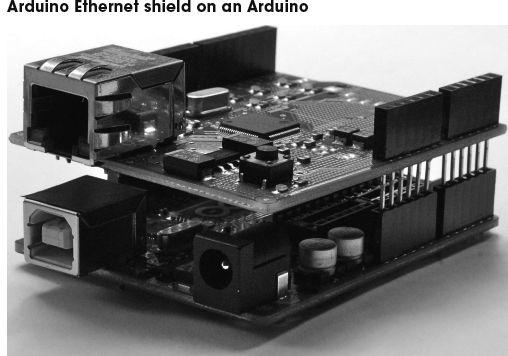
FIGURE 13.12
There are shields available for almost anything you could want an Arduino to do. They range from relay control to LED displays and audio file players. Most of these are designed with the Arduino Uno in mind, but are also usually compatible with the Arduino Mega.
An encyclopedic list that includes useful technical details about the pin usage of these shields can be found at http://shieldlist.org/. Some of the author’s favorite shields are listed in Table 13.5.
TABLE 13.5 Common Arduino Shields
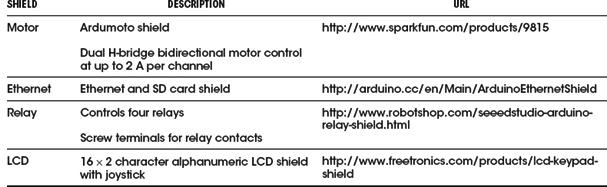
13.4.5 The Arduino C Library
You may hear people refer to the “Arduino language,” but Arduino is actually just programmed in the C programming language, which has been around for many years. But Arduino provides a set of Arduino core functions that you can use in your programs, or sketches.
There are a large number of commands available in the Arduino library. A selection of the most commonly used commands are listed in Table 13.6.
TABLE 13.6 Arduino Library Functions
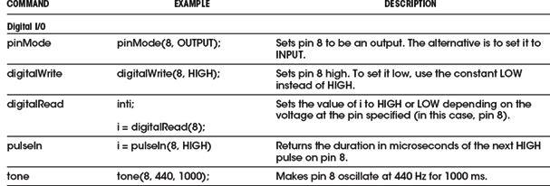
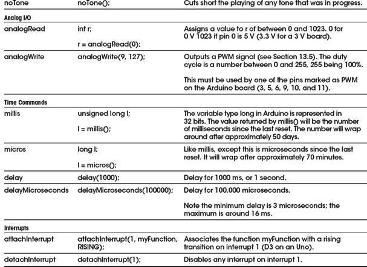
The main Arduino core, including all the commands listed in Table 13.6, is automatically included in every sketch that you write. However, there are a number of other libraries that come bundled with the Arduino IDE that are added to your code only when you use them. To include them, use the include command followed by the name of the library, like this:
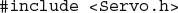
This command includes the Servo library that we will use in the example Arduino project that follows.
The libraries that are included in the Arduino IDE are listed in Table 13.7.
TABLE 13.7 Standard Arduino Libraries
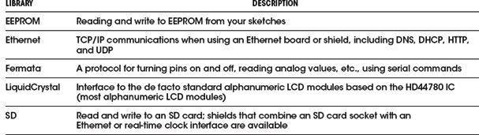
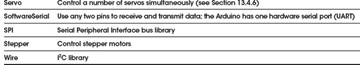
As well as the official Arduino libraries, as an open system, anyone can write a library and contribute it to the community, and many of these are extremely useful. Some of these other libraries are listed in Table 13.8.
TABLE 13.8 Contributed Arduino Libraries
For more information about Arduino, the official Arduino website (http://www.arduino.cc) should be your first port of call.
13.4.6 Arduino Example Project
We are going to repeat the BASIC Stamp example project, using the same external electronics, but controlled by an Arduino rather than a BSII. The following listing shows the code needed to control the robot.
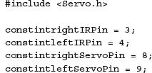
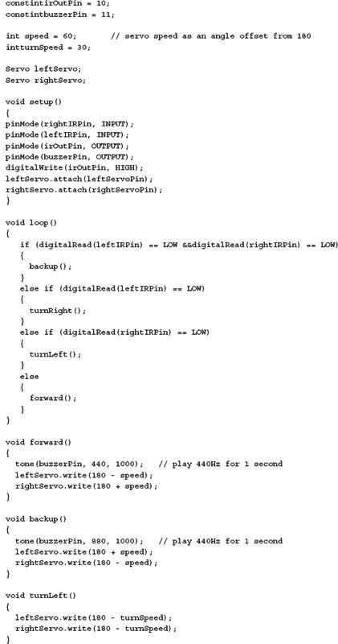
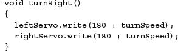
There are many obvious similarities with the BASIC Stamp version. However, the C language used by Arduino provides a little more structure to the program, and seasoned programmers will probably feel happier using C rather than BASIC.
As noted in the previous section, a feature of the Arduino platform is the large number of libraries, both official and user-supplied, that can be included in the program. The first line includes a library for controlling servos. Strictly speaking, this is C++, the object-oriented extension to C. So, to control a servo, we first need to create an instance (well, two in this case):
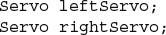
Then we need to associate it with a particular pin using the following:
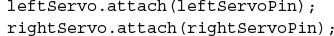
From now on, all we need to do is give the servo an angle in degrees, using the write command, like this:
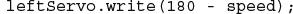
There is no need to worry about pulse lengths; all this is handled for us automatically.
13.4.7 Taking the Arduino Offboard
For all its convenience and ease of use, an Arduino Uno is just a microcontroller with the necessary support components to provide it with a regulated voltage and allow it to be programmed over USB. When the time comes to create a product, if it is a one-off, you will probably just use the Arduino as it is, and buy yourself a replacement for the next project. If however, you will be producing a number of devices, you will probably want to lose the Arduino board and just use the programmed microcontroller in your project.
Taking the Arduino offboard means that you will probably design your own PCB for the microcontroller that includes just those features of the Uno that you need in your project, along with those extra components that may have been provided by a shield or connections to other electronics on, say, a breadboard.
The ATmega328 is not as easy to run using an internal oscillator as the ATtiny.
The IDE expects an external clock (crystal or ceramic resonator). You will probably also want to use a voltage regulator IC to provide a stable voltage to the microcontroller.
The schematic shown in Fig. 13.13 was produced in Eagle CAD, along with the corresponding board shown in Fig. 13.14.
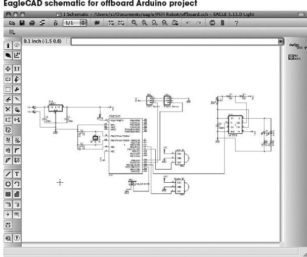
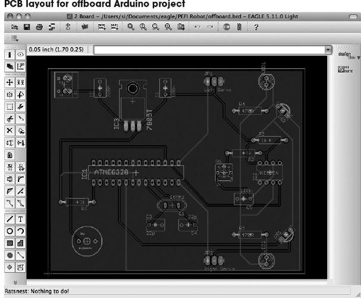
FIGURE 13.14
13.5 Interfacing with Microcontrollers
Whether you are using an ATtiny, a PIC, or an Arduino, you can be fairly certain that you will need to connect some components to it. At the very least, there will probably be a switch or two.
You can use three types of interfaces to your microcontroller:
• Digital: Switches as inputs, LEDs or similar as outputs
• Analog: Sensors of various types (see Chap. 6)
• Serial: A serial communications protocol of which there are four main types: TTL serial, I2C, 1-Wire, and Serial Peripheral Interface (SPI).
In the following sections, we will assume that your microcontroller has both analog and digital inputs, as well as digital and PWM outputs. It is also assumed that the microcontroller is operating at 5V. This may not always be the case, as many microcontrollers can be used at lower voltages, and 3.3 V is another common choice. If this is the case, you will need to adapt some of the schematics.
13.5.1 Switches
Single Switches
Switches are easy to connect to a digital input (see Fig. 13.15). Note the use of pullup resistors that keep the pin high until it is closed. When the switch is of the normally closed variety, then that current will be drawn continually, so you may want to use a high value of resistor there—say, 10 kΩ. However, for a normally open switch, current will flow only when the switch is pressed, so 1 kΩ is fine.
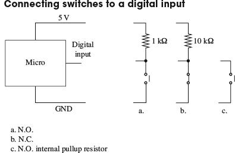
FIGURE 13.15
With the switch to GND, as shown in all the examples in Fig. 13.15, when the switch is closed, the digital input will go low. This means that the logic of a button being pressed is inverted, as shown in the following sample Arduino C code.
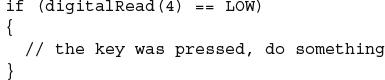
It is also possible to swap over the switch and resistor, so that the resistor is now a pulldown resistor, and the switch being closed will result in a logical HIGH at the input.
The choice of pullup resistor depends on how electrically noisy your environment is and how long the leads are from the microcontroller to the switch. Essentially, it is a compromise between immunity to noise and current consumption. Given that for a normally open switch, current will flow only when the button is pressed, 5 mA using a 1 kΩ resistor is not normally a problem. In fact, some would advocate a lower value, such as 270 Ω.
Many microcontrollers include internal pullup resistors that can be turned on and off for a particular digital input. On an ATmega and ATtiny microcontroller, this resistor typically has a value of 20 k to 40 kΩ, so in a noisy environment or if the lead to the switch is long, an external pullup resistor may be better.
Multiple Switches to One Analog Input
If you have a lot of switches and do not want to tie up a load of digital inputs, then a common technique is to use an analog input and a number of resistors. The voltage at the analog input will then depend on the switches that are pressed (see Fig. 13.16).
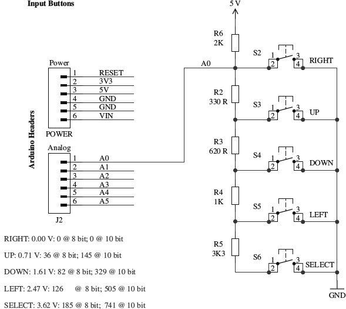
FIGURE 13.16
Figure 13.16 is taken from the schematic diagram for the Freetronics Arduino LCD shield, where it is used for the five switches of a joystick type arrangement of push buttons (thanks to Freetronics for permission to use this diagram). Note how the decimal values for 10-bit A to D for each button are given as a table.
Multiple switches and an analog input
The analog reading will not normally be exactly the value required due to resistor tolerances and power supply voltage changes, so in the code that interprets this, you would normally specify a band that would indicate a certain button, rather than just one value.
Using a Matrix Keypad
Keypads use switches arranged in a matrix, as shown in Fig. 13.17. The 4 × 3 keypad shown in the figure has a key at the intersection of each row and column. To determine which keys are pressed, the microcontroller will take each of the output pins Q0 to Q2 high in turn, and see what value is presented at each of the inputs I0 to I3. Note that if the microprocessor does not support internal pullup resistors, then these pullup resistors would be required on each input.
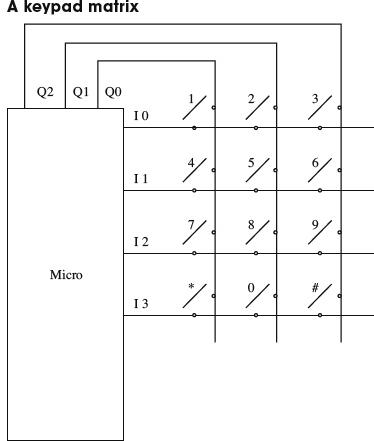
FIGURE 13.17
In practice, this is such a common component for microcontrollers that to write your own code for it would be needlessly reinventing the wheel. As an example, the following is the Arduino code for this that uses a library.
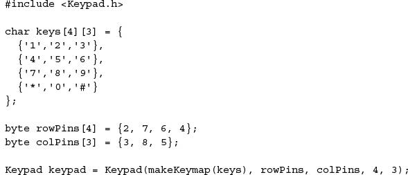
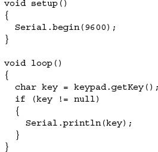
This example code will send any key that is pressed out through the Arduino serial monitor.
Debouncing
Attach an oscilloscope to the output of any of the circuits in Fig. 13.15, and you are likely to see an output something like what is shown in Fig. 13.18 when the switch is closed. This is called bouncing.
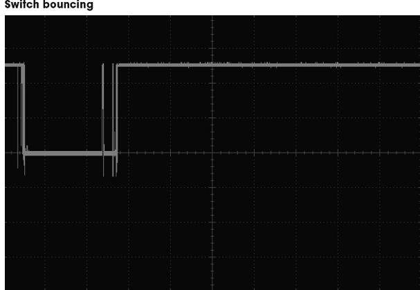
FIGURE 13.18
Switch bouncing can cause problems. Imagine the situation where pressing a button toggles an LED on and off. If there are an even number of bounces, then the LED will toggle on and then immediately off again, giving the impression that nothing happened.
It is therefore a good idea to debounce any switches that are connected to a microcontroller input. Although it is perfectly possible to do this with hardware—say, with a monostable that ignores subsequent pulses from the switch after triggering—it reduces the component count if you do the debouncing in software.
As with keyboard matrices, debouncing is a common problem that has been solved many times. The essence of software debouncing is the same as hardware debouncing, and that is to take action on the first transition and then ignore any subsequent transitions of the output until a safe debounce period has elapsed. Depending on what else the microcontroller has to do, this can be as simple as inserting a delay for the debounce period in the code that immediately follows the detection of the first transition. However, sometimes this is not possible, such as when the microcontroller has other responsibilities (like refreshing an LED display). In these cases, a common approach is to set a variable to the milliseconds tick after the first transition and make a condition of actioning the button press that sufficient debounce time has elapsed. The Arduino code for this is as follows.
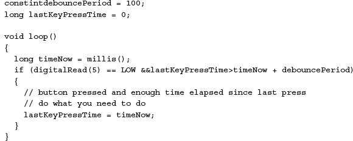
13.5.2 Analog Inputs
Many of the sensors described in Chap. 6 provide an analog output to indicate the property that they are reading. For example, the TMP36 temperature sensor IC would typically be connected directly to an analog input of a microcontroller, as shown in Fig. 13.19.
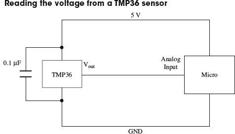
FIGURE 13.19
If you are measuring a voltage that is outside the range of the microcontroller’s analog input (say 0 to 10 V), then you can just use two resistors as a voltage divider to reduce the voltage appropriately. If there is a risk that the voltage may exceed the expected range, you can protect the microcontroller’s analog input by adding a zener diode (see Fig. 13.20).
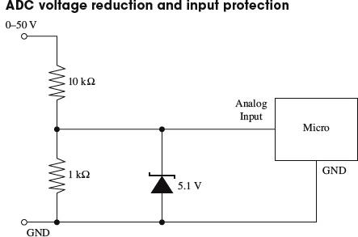
In practice, the zener diode will start to conduct before 5.1 V, to the detriment of the linearity of the readings, which is why the input range is labeled as 0 to 50 V, rather than 0 to 55 V. Remember the voltage divider is 1:11, not 1:10.
If switching behavior is required, then this should be implemented in code rather than through hardware. This approach allows more flexibility, for instance, for adding hysteresis or changing the set temperature. The following Arduino C code illustrates a simple temperature-control algorithm with 4 (±2) degrees of hysteresis.
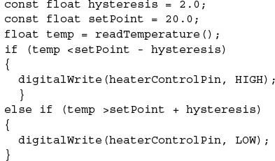
This example assumes that there is a user-supplied function called read Temperature.
For measuring resistance, sensors that are resistive, like LDRs and thermistors, will usually simply be used as one leg of a potential divider to produce a voltage that can be read. This is discussed in the relevant sensor sections in Chap. 6.
13.5.3 High-Power Digital Outputs
Most microcontrollers will reliably provide us with only around 20 mA of source or sink current as a direct digital output. If you want to drive a higher power load, such as a relay or a high-power LED, then you need to use a transistor.
Note that Arduino will handle up to 40 mA per pin with a maximum per chip of 200 mA. These figures should be derated by 25 percent for a production product, but Atmel says that the chip can comfortably cope with the absolute maximum current ratings, as these figures are already derated.
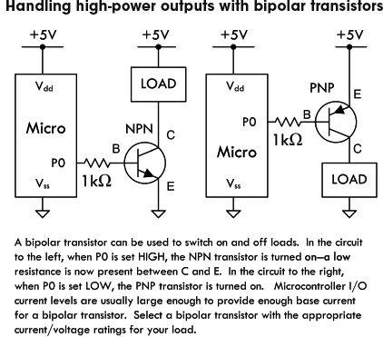
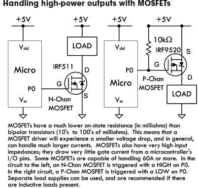
FIGURE 13.22
MOSFETs have a number of advantages over bipolar transistors. One is that for most applications, they do not need a gate resistor. However, MOSFETs are a capacitative load, so the inrush current when the pin changes state can be very high, albeit for a very short duration. Microcontrollers will generally cope with this, but for ultimate adherence to design rules, use a gate resistor of around 1 kΩ.
Another advantage of using MOSFETs as switches is their exceptionally low drain-source on resistance and high off resistance. This makes a small MOSFET capable of controlling quite big loads. However, you should check the gate threshold voltage to make sure that it is not above the logic level. For instance, an N-channel MOSFET with a gate threshold voltage of 6 V is not going to turn on when the gate goes to just 5 V. This is more of a problem with high-power MOSFETs. When using high-power MOSFETs, look for those described as “logic-level” MOSFETs, meaning that they have a gate threshold significantly less than 5 V.
Relays and Other Inductive Loads
With the exception of some reed relays, very few relays will switch with a current less than 50 mA, and therefore you will nearly always need to use a transistor as just described. You also need to remember to use a reverse-biased diode across the relay’s coil, to prevent voltage spikes damaging the transistor during switching. Figure 13.23 shows this arrangement.
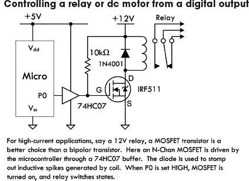
FIGURE 13.23
Pulse-Width Modulation
The schematic shown in Fig. 13.23 is also suitable for controlling inductive loads like dc motors. If the digital output is driven as PWM, then this circuit can also be used to control the power going to the motor, and hence its speed (see Fig. 13.24).
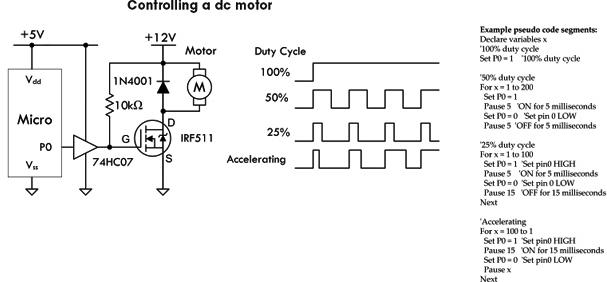
The waveforms on the right in Fig. 13.24 show how you can control the motor speed by adjusting the duty-cycle (proportion of time the power is on). The pseudocode on the right shows how this is accomplished. Note that some microcontrollers also have dedicated hardware support to simplify the process of generating PWM signals.
If your microcontroller has fairly robust output drivers, then there is probably little point in using the 74HC07 buffer.
Directional Motor Control
Directional control of motors can be achieved using an H-bridge, as shown in Fig. 13.25.
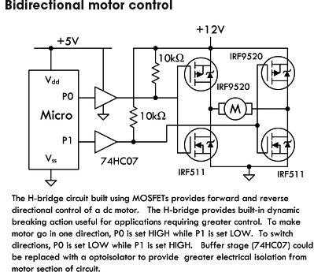
FIGURE 13.25
Most useful for controlling motor currents of less than a couple of amps are IC H-bridges such as the TB6612FNG, which combine all the transistors into one package. They often also have features such as thermal shutdown, to protect against overloading.
Servo Motor Control
We have already touched on controlling servo motors in our robot example project. Since the servo uses a control signal, this can be provided directly from a digital output (see Fig. 13.26).
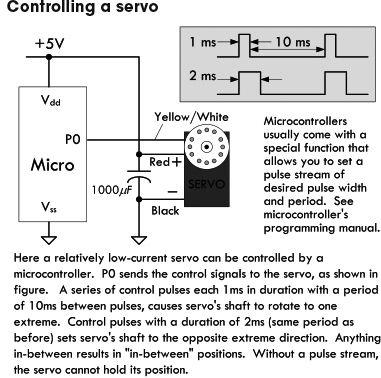
Stepper Motor Control
A stepper motor has a number of coils that must be energized in the correct sequence to move the rotor. The arrangement shown in Fig. 13.27 can be used to accomplish this.
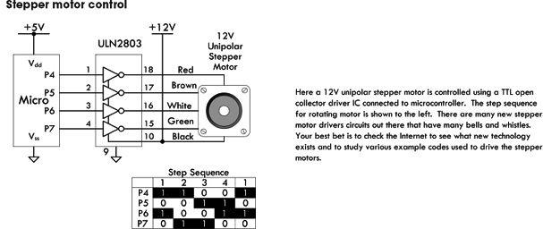
FIGURE 13.27
See Chap. 14 for more information about motors.
13.5.4 Sound Interfaces
Figure 13.28 shows a schematic for detecting sound. The second comparator stage is optional, and the output of the first stage could be fed directly into an analog input, allowing the sound to be sampled. Most microcontroller ADCs are not terribly fast, but even so, they should be able to sample at above 10 kHz, allowing some primitive digital signal processing.
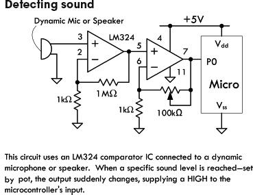
When it comes to generating sound, being digital devices, few activities come more naturally to a microcontroller than generating a squarewave. All it needs to do is set a pin high, wait, set it low, then wait again, and keep repeating those steps. As demonstrated earlier in the chapter, both the Arduino library and the BASIC Stamp provide commands to do this directly. If you are using a piezo speaker, this can be driven directly from a digital output. If you are using a electromagnetic loudspeaker, then this will be beyond the drive capabilities of an output pin, and you will need to amplify the signal. For a range of audio amplifier circuits, refer to Chap. 15. But given that a squarewave sounds pretty harsh, then high-quality amplification is unnecessary, and a circuit like the one shown in Fig. 13.21, where the load is a loudspeaker, will work just fine. Make sure you do the math to check that the transistor can cope with the collector current, as most loudspeakers are 8 Ω.
Generating a sine wave requires a bit of thought and effort. A first idea may be to use the PWM output of one of the pins to write out the waveform. However, the PWM switching frequency for most microcontrollers is at an audio frequency, so without a lot of care, the signal will sound as bad as a squarewave. A better way is to use a DAC, which has a number of digital inputs and produces an output voltage proportional to the digital input value. Fortunately, it is very easy to make a simple DAC—all you need are resistors.
Figure 13.29 shows a DAC using an R-2R resistor network. It uses resistors of a value R and twice R, so R might be 5 KΩ and 2R 10 KΩ. Each of the digital inputs will be connected to an Arduino digital output. The four digits represent the 4 bits of a digital number, so this gives us 16 different analog outputs. Higher-resolution DACs can be made by using more stages. Alternatively, DAC ICs, which can be more convenient to use, are available.
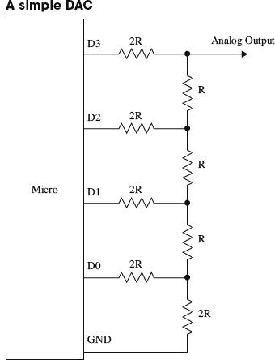
13.5.5 Serial Interfaces
There are a number of different standards for serial interfaces to microcontrollers, which use different numbers of pins and approaches to communication. In this section, we will explore some of them and look at how they can be used to connect things to a microcontroller.
When communicating with a peripheral, whichever serial interface it uses, there are a number of ways that the microcontroller might interact with the device. You may simply issue commands from the microcontroller, usually in the form of a 1-byte code that means something like “take a temperature reading,” or in the case of serial EEPROM, “store this data here.” The device then may respond with a result or value. Another common, but far less intuitive, approach is for the device to use registers, and some of the commands concerned with fetching and setting bits in the register that then control the electronics of the device. So, for instance, setting an I2C FM receiver IC to operate in stereo rather than mono involves setting the appropriate bit in a register using a general-purpose write-register command, rather than a command specific to setting the mode to mono or stereo.
1-Wire Bus
As the name implies, the 1-Wire serial bus uses just a single connection (apart from a common ground) to communicate. This standard was developed by Dallas Semiconductors and is used in a variety of sensors and other devices such as ADCs and EEPROM. It can operate at either 5 V or 3.3 V, so always check that a device you are connecting to your microcontroller operates at the same voltage. If it doesn’t, then damage may ensue.
The DS18B20 temperature sensor uses the 1-Wire interface. This sensor was introduced in Chap. 6. In this chapter, we will look at how the sensor can be used in parasitic power mode, so that only two connections are needed from the microcontroller to the device. Furthermore, up to 255 devices can be connected to the same wire.
Figure 13.30 shows a DS18B20 attached to a microcontroller. 1-Wire devices act as either a master or slave. The microcontroller will be the master, and the peripheral devices, such as sensors, the slave. The slave devices contain a capacitor that is charged from the bus when no data is being transferred and used to power the slave device while the bus is being used for data. When the DS18B20 is being used this way, its GND and Vdd connections are tied together. The communication is two-way, so the microcontroller will use the pin as both an input and an output, changing the pin’s direction while the program is running. Every slave device has a unique 64-bit identifier that is programmed into ROM during manufacture.
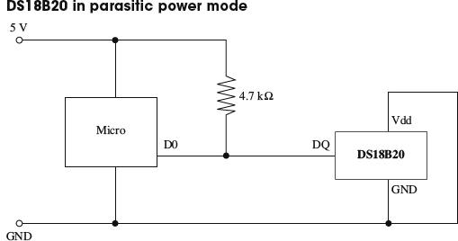
Communication is always initiated by the master (microcontroller), which will put the data line into output mode and send a command as a sequence of pulses. The data line is pulled up to 5 V, so pulses are from 5 V to GND. A pulse of 60 μS signifies a 0, and 15 μS indicates a 1.
When the microcontroller needs to issue a command, it first sends a reset pulse of at least 480 μS, followed by the command sequence that includes the identifier of the device. The available device IDs are found by a special search protocol where the master sends a command that requests devices with a particular bit in their ID to respond. If more than one responds, then it tries another bit, and in this way, efficiently identifies all the devices.
Any microcontroller that you use with 1-Wire will have a library and example code for using the bus, so there is little point in looking at the low-level protocol. The following fragments of code illustrate how the Arduino OneWire library is used with a DS18B20.
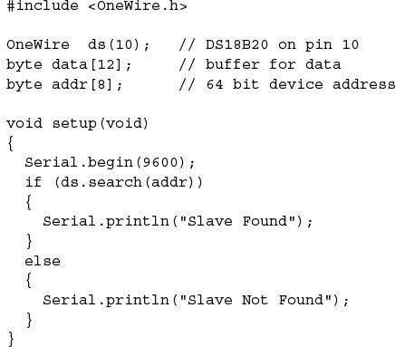
The first step is to include the OneWire library and define some byte arrays to hold the data and the device ID for the DS18B20. The setup function opens a serial port, so that the temperature readings can be sent to the Arduino serial monitor, and then searches for devices on the 1-Wire bus. There should only be one, and if it is found, then a suitable message is displayed.
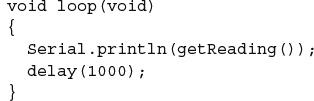
The main loop simply calls the function getReading, sends it to the Arduino serial monitor, and then pauses for a second.
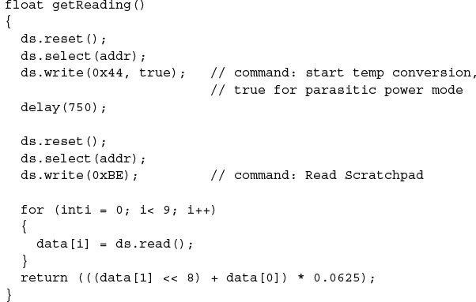
The getReading function is where most of the work goes on. It has two commands: one to start the temperature conversion and another to read the data resulting from the conversion.
Each command is preceded by a reset. Note how the slave to be communicated with is set using ds.select(). We then read the response into the byte array called data. To actually decode the temperature, we need only the first 2 bytes of the data, which are combined into a 16-bit integer and multiplied by the scaling factor (defined in the DS18B20 data sheet) as 0.0625.
Next, we have this line:
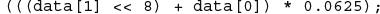
This first shifts the byte contained in data[1] left by 8 bits, and then adds in the lower 8 bits contained in data[0]. This results in a 16-bit integer that must be multiplied by 0.0625 to produce a temperature in degrees Celsius (see the data sheet for the DS18B20).
The resulting trace in the Arduino serial monitor should look something like Fig. 13.31.
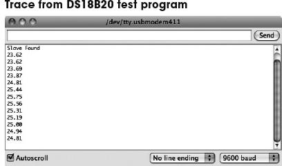
I2C (TWI)
On the face of it, the I2C, also sometimes known as the Two-Wire Interface (TWI), serves much the same purpose as 1-Wire, although it has two wires rather than one for data. Like 1-Wire, it is a bus and can support multiple devices connected to the same two wires. It also can run at either 5 V or 3.3 V. However, it is faster than 1-Wire, with top speeds of up to 400 kbits/s.
The two data lines of I2C are open-drain connections that operate as both inputs and outputs at the microcontroller. They must have pullup resistors in the same way as 1-Wire, but there is no equivalent to the 1-Wire parasitic mode, so remote sensors will generally require four wires in total: two for data and two for power.
Figure 13.32 shows how two microcontrollers might communicate using I2C.
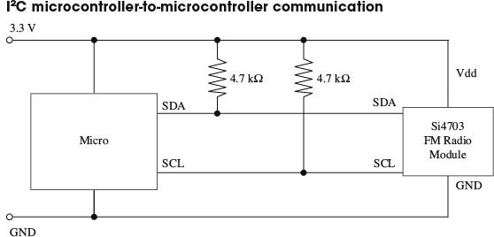
FIGURE 13.32
I2C devices are either masters or slaves, and there can be more than one master device per bus. In fact, devices are allowed to change roles, although this is not usually done. It is common for microcontrollers to have an I2C interface and use it to exchange data between microcontrollers.
The serial clock line (SCL) is a clock, and the serial data line (SDA) carries the data. The timing of these pins is shown in Fig. 13.33. The master supplies the SCL clock, and when there is data to be transmitted, the sender (master or slave) takes the SDA line out of tri-state and sends data as logic highs or lows in time with the clock signal. When transmission is complete, the clock can stop and the SDA pin be taken back to tri-state.
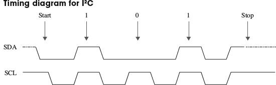
Whether using I2C or 1-Wire, from a microcontroller, the code is likely to be similar, and a library is provided to hide the low-level timing of the protocol.
The following example, in Arduino C, shows I2C in action to send data from one microcontroller to another. When using I2C to interface with a sensor or other I2C slave device, the process is similar, but the messages will generally be packed into byte arrays. For this kind of application, every device will be different, and the data sheet for the device should be studied to determine the format of the messages that it expects. These examples are adapted from the examples provided with the Arduino environment. Thanks to Nicholas Zambetti for making this code public domain.
We start with the code for the transmitting microcontroller.
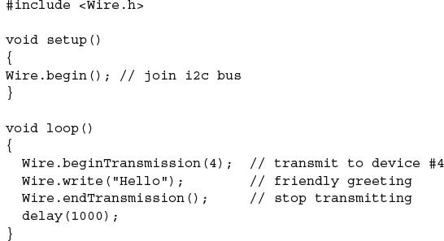
The transmission is very simple. We just say which device on the bus we want to send to, and then send it the data. In this case, the data is a string, but the write method can also take a single byte or a byte array as arguments for the data to be sent.
Receiving the data is a little more complex.
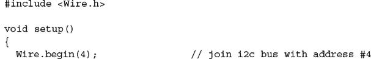
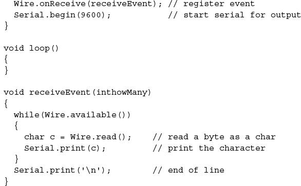
In this case, the receiver is a slave device and must identify itself—in this case, using the number 4 as its argument to Wire.begin. It then registers a function receiveEvent, which should be invoked whenever there is incoming data for this device. This function simply loops over each byte of data in the message, displaying it on the Arduino serial monitor.
Serial Peripheral Interface
Yet another microcontroller bus standard is the SPI bus. This one uses four data lines and is faster than the previous buses that we have looked at (up to 80 Mbits/s).
Figure 13.34 shows how a number of peripherals can be connected to the bus. Note that there can only be one master device.
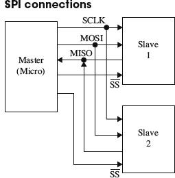
FIGURE 13.34
The slave devices are not assigned addresses. Instead, the master (usually a microcontroller) must have a dedicated Slave Select (SS) line for each of the slave devices, just selecting the one it communicates with. The other extra line is required because separate lines are used for each direction of communication. The Master Out/Slave In (MOSI) line carries the data from the master to the slave device, and the Master In/ Slave Out (MISO) line does the reverse.
Many different data protocols have been layered over the physical serial interface, but the basic principal is the same as for the other buses that we have looked at. The approach to take is to find the SPI library for the microcontroller that you intend to use and read the data sheet for the device you wish to communicate with.
The SPI specification does not define the bit order for sending data, so make sure that your code agrees with the device in this respect.
SPI is also used as a means of ICSP on some microcontrollers, such as the ATmega and ATtiny families.
Serial
Many devices use yet another type of interface called just serial. This is a very old standard with its roots dating back to the days of teletypes. Some computers with serial ports can still be found. In the “good old days,” people used to attach modems to them for communicating over phone lines with other computers.
The normal voltages used in the signals for serial ports conform to the standard RS-232 and use voltages that swing both positive and negative with respect to GND. This is not terribly convenient when using microcontrollers. For this reason, microcontrollers use the same communication protocol, but at logic levels. This is called TTL Serial, although more and more, it is being used by devices using 3.3 V rather than 5 V. See the next section for information about level conversion.
Electrically, TTL Serial uses two data pins: Tx and Rx (Transmit and Receive). It is not a bus, and the connection is point to point, so there are no problems with addressing different devices.
Another remnant from early computer history is the nomenclature around the bandwidth of serial connections. A serial connection must be set to the same baud rate at both ends of the connection. The baud rate is the number of bits per second, but that does include start, stop, and potentially parity bits, so the actual transmission of data is a little slower than the baud rate. To simplify matching up the baud rates at each end of the connection, a set of standard baud rates is used: 110, 300, 600, 1200, 2400, 4800, 9600, 14400, 19200, 38400, 57600, 115200, 128000, and 256000. Of these, 1200 is probably the slowest baud rate commonly in use, and many TTL serial devices will not go as high as 115200. 9600 is a very commonly used baud rate, and devices will often default to this rate, but be configurable to other rates.
As well as the baud rate, other parameters that define a serial connection are the number of bits per word, the type of parity bit, and the number of start and stop bits. Almost universally, these are defined as 8, none, and 1, respectively, which is often abbreviated to 8N1.
Bits are simply sent as high or low logic levels (see Fig. 13.35). As there is no separate clock signal, timing is critical, so after the start bit, the receiver will sample at the appropriate rate until it has read the 8 data bits and the 1 stop bit. The least significant bit of the data is sent first.
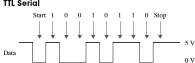
FIGURE 13.35
Most microcontrollers will either have dedicated hardware for TTL Serial (a UART) or manufacturer-developed software libraries for serial.
13.5.6 Level Conversion
There is a recent trend for microcontrollers and other ICs to use 3.3 V or even 1.8 V rather than 5 V. Lower-voltage devices use less current and can be more convenient to power from batteries. The same is also true of modules that the microcontrollers need to communicate with. While some 3.3 V devices can tolerate 5 V, many cannot. This means that if you are communicating with them using one of the bus and serial interfaces discussed previously, you will need to make sure that you convert voltage levels appropriately.
SPI and TTL Serial Level Conversion
Converting levels on SPI and TTL Serial is quite easy, because they have separate lines for each direction of communication. Figure 13.36 shows how resistors can be used as simple voltage dividers.
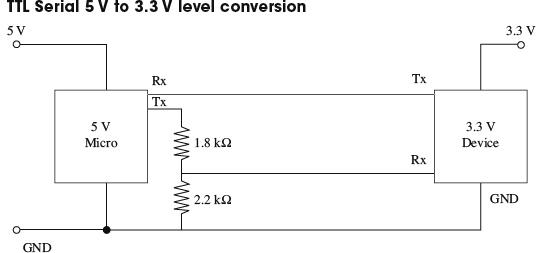
FIGURE 13.36
The Tx output of the 3.3 V device can be connected directly to the Rx input of the 5 V microprocessor, because it will see any input over about 2.5 V as a logical high anyway. The voltage divider is required when the 5 V Tx output of the microprocessor must be reduced to prevent damage to the 3.3 V device.
I2C and 1-Wire Level Conversion
The problem is more complex when pins change modes, from being an input and being an output, as they do with I2C and 1-Wire. In both these cases, the best solution is to use a custom level-shifting IC such as the TXS0102, which can convert two levels (ideal for I2C). Figure 13.37 shows the TXS0102 used to convert levels for I2C. Alternative ICs that perform the same role are the MAX3372, PCA9509, and PCA9306.
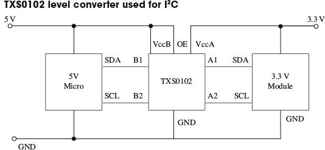
13.5.7 LED Display Interfaces
LED displays made up of a number of LEDs encapsulated in a single package can be a challenge to control. Such displays will normally be controlled using a microcontroller, however, it is not necessary to use a microcontroller to pin each individual LED. Instead, multi-LED displays are organized as common anode or common cathode, with all the LED terminals of the anode or cathode connected together and brought out through one pin. Figure 13.38 shows how a common anode seven-segment display might be wired internally.
FIGURE 13.38
In a common cathode display like this, the common cathode would be connected to ground, and each segment anode driven by a microcontroller pin through a separate current-limiting resistor. Do not be tempted to use one resistor on the common pin and no resistors on the noncommon connections, as the current will be limited no matter how many LEDs are lit, and so the display would get dimmer as more LEDs were illuminated.
Multiplexing LED Displays
It is quite common for multiple displays to be contained in the same case. For example, Fig. 13.39 shows a three-digit seven-segment common cathode LED display. In this kind of display, each digit of the display is like the single-digit display of Fig. 13.39 and has its own common cathode. But, in addition, all the A segment anodes are connected together, as is each segment.
The microcontroller, or LED driver IC, using the display will activate each common cathode in turn, turn on the appropriate segments for that digit, and then move on to the next digit. This refresh happens very quickly, so that the display appears to show different numbers on each digit. This is called multiplexing. The same approach can be used with LED matrices, where each column is activated in turn, and then the appropriate pins are set for the rows of that column.
Note the use of transistors to control the common cathodes. This is simply to handle the current of potentially eight LEDs at once, which would be too much for most microcontrollers.
Charlieplexing
When looking to minimize the number of pins used to display a matrix of LEDs, an interesting technique called Charlieplexing can be used. (The name comes from the inventor Charlie Allen at Maxim.) This technique takes advantage of the feature of modern microcontroller I/O pins that allows them to be changed from outputs to high-impedance inputs while a program is executing. Figure 13.40 shows the arrangement for controlling six LEDs with three pins.
FIGURE 13.40
Charlieplexing is a dynamic activity, so rather like multiplexing, not all the LEDs that you want to be lit are lit at the same time, but they will appear lit as the display is refreshed faster than the eye can keep up. To do this, the pins will be high, low, or high impedance input, as shown in Table 13.9.
TABLE 13.9 Charliplexing LED Addressing
The number of LEDs that can be controlled per microcontroller pin is given by the following formula:
LEDs = n2 – n
So, if we use 4 pins, we can have 16 – 2, or 12, LEDs, and 10 pins would give us a massive 90 LEDs. However, there are problems with scaling Charlieplexing up. One is due to the fact that the refresh rate needs to be fast enough to fool the eye, and a large number of pins will need a lot of sequence steps to energize all the LEDs that need energizing in a refresh cycle. This will also result in the LEDs becoming dim, as their duty cycle will be low. You can compensate for this to some extent by increasing the current through the LEDs, which will cope with fairly large peak currents for a small duration. This does lead to the problem that if the microcontroller freezes for some reason, the LEDs could burn out.
Controlling the Color of RGB LEDs
RGB LEDs are actually three LEDs in one package (one red, one green, and one blue). The package will often be common anode or common cathode. By controlling the power to each of the LEDs separately, it’s possible to set the overall color of the LED module to any color at any intensity.
While you could change the intensity of each color channel by controlling the current to the LED in an analog fashion, it is far better to control it with a PWM signal. The duty cycle will control the brightness of the LED in a far more linear manner than controlling the current in an analog fashion.
Motors
Perhaps one of the most entertaining things to do with electronics is make some mechanical device move. Three very popular devices used to “make things move” include dc motors, RC servos, and stepper motors.
FIGURE 14.1
14.1 DC Continuous Motors
A dc motor is a simple two-lead, electrically controlled device that comes with a rotary shaft on which wheels, gears, propellers, etc., can be mounted. A dc motor generates a considerable amount of revolutions per minute (rpm) for its size and can be made to rotate clockwise or counterclockwise by reversing the polarity applied to the leads. At low speeds, dc motors provide little torque and minimal position control, making them impractical for pointlike position-control applications.
dc motors are available in many different shapes and sizes. Most dc motors provide rotational speeds anywhere between 3000 and 8000 rpm at a specific operating voltage typically set between 1.5 and 24 V. The operating voltage provided by the manufacturer tells you at what voltage the motor runs most efficiently. Now, the actual voltage applied to a motor can be made slightly lower to make the motor slower or can be elevated to make the motor faster. However, when the applied voltage drops to below around 50 percent of the specified operating voltage, the motor usually will cease to rotate. Conversely, if the applied voltage exceeds the operating voltage by around 30 percent, there is a chance that the motor will overheat and become damaged. In practice, as you will see in a second, the speed of a dc motor is most efficiently controlled by means of pulse-width modulation, whereby the motor is rapidly turned on and off. The width of the applied pulse, as well as the period between pulses, controls the speed of the motor. Also, it is worth noting that a freely running motor (no load) may draw little current (power). However, if a load is applied, the amount of current drawn by the motor’s inner coils goes up immensely (up to 1000 percent or more). Manufacturers usually will provide what is called a stall current rating for their motors. This rating specifies the amount of current drawn at the moment the motor stalls. If your motor’s stall current rating is not listed, it is possible to determine it by using an ammeter; slowly apply a force to the motor’s shaft, and note the current level at the point when the motor stalls. Another specification given to dc motors is a torque rating. This rating represents the amount of force the motor can exert on a load. A motor with a high torque rating will exert a larger force on a load placed at a tangent to its rotational arm than a motor with a lower torque rating. The torque rating of a motor is usually given in lb/ft, g/cm, or oz/in.
14.2 Speed Control of DC Motors
FIGURE 14.2
A seemingly obvious approach to control the speed of a dc motor would be simply to limit the current flow by using a potentiometer, as shown in the circuit to the left in the figure. According to Ohm’s law, as the resistance of the pot increases, the current decreases, and the motor will slow down. However, using a pot to control the current flow is inefficient. As the pot’s resistance increases, the amount of current energy that must be converted into heat increases. Producing heat in order to slow a motor down is not good—it consumes supply power and may lead to potentiometer meltdown. Another seemingly good but inefficient approach to control the speed of a motor is to use a transistor amplifier arrangement like the one shown to the right in the figure. However, again, there is a problem. As the collector-to-emitter resistance increases with varying base voltage/ current, the transistor must dissipate a considerable amount of heat. This can lead to transistor meltdown.
In order to conserve energy and prevent component meltdown, an approach similar to what was used in switching power supplies is used to control the speed of the motor. This approach involves sending the motor short pulses of current. By varying the width and frequency of the applied pulses, the speed of the motor can be controlled. Controlling a motor’s speed in this manner prevents any components from experiencing continuous current stress. Figure 13.3 shows three simple circuits used to provide the desired motor-control pulses.
In the first circuit, a UJT relaxation oscillator generates a series of pulses that drives an SCR on and off. To vary the speed of the motor, the UJT’s oscillatory frequency is adjusted by changing the RC time constant.
In the second circuit, a pair of NAND gates make up the relaxation oscillator section, while an enhancement-type power MOSFET is used to drive the motor. Like the preceding circuit, the speed of the motor is controlled by the oscillator’s RC time constant. Notice that if one of the input leads of the left NAND gate is pulled out, it is possible to create an extra terminal that can be used to provide on/off controls that can be interfaced with CMOS logic circuits.
The third circuit is a 555 timer that is used to generate pulses that drive a power MOSFET. By inserting a diode between pins 7 and 6, as shown, the 555 is placed into low-duty cycle operation. R1, R2, and C set the frequency and on/off duration of the output pulses. The formulas accompanying the diagram provide the details.
A microcontroller-based dc control circuit with speed control is found in Chap. 13.
FIGURE 14.3
14.3 Directional Control of DC Motors
To control the direction of a motor, the polarity applied to the motor’s leads must be reversed. A simple manual-control approach is to use a DPDT switch (see leftmost circuit in Fig. 14.4). Alternately, a transistor-driven DPDT relay can be used (see middle circuit). If you do not like relays, you can use a push-pull transistor circuit (see leftmost circuit). This circuit uses a complementary pair of transistors (similar betas and power rating)—one is an npn power Darlington, and the other is a pnp power Darlington. When a high voltage (e.g., +5 V) is applied to the input, the upper transistor (npn) conducts, allowing current to pass from the positive supply through the motor and into ground. If a low voltage (0 V) is applied to the input, the lower transistor (pnp) conducts, allowing current to pass through the motor from ground into the negative supply terminal.
FIGURE 14.4
Another very popular circuit used to control the direction of a motor (as well as the speed) is the H-bridge. Figure 14.5 shows two simple versions of the H-bridge circuit. The left H-bridge circuit is constructed with bipolar transistors, whereas the right H-bridge circuit is constructed from MOSFETs. To make the motor rotate in the forward direction, a high (+5-V) signal is applied to the forward input, while no signal is applied to the reverse input (applying a voltage to both inputs at the same time is not allowed). The speed of the motor is controlled by pulse-width modulating the input signal. Here is a description of how the bipolar H-bridge works: When a high voltage is applied to Q3’s base, Q3 conducts, which in turn allows the pnp transistor Q2 to conduct. Current then flows from the positive supply terminal through the motor in the right-to-left direction (call it the forward direction if you like). To reverse the motor’s direction, the high voltage signal is removed from Q3’s base and placed on Q4’s base. This sets Q4 and Q1 into conduction, allowing current to pass through the motor in the opposite direction. The MOSFET H-bridge works in a similar manner. The diodes within the H-bridge circuits help dampen transient spikes that are generated by the motor’s coils so that they do not damage the other components within the circuit. All transistors (except the bipolar within the MOSFET circuit) should have high power ratings.
FIGURE 14.5
Now, it is possible to construct these H-bridge circuits from scratch, but it is far easier and usually cheaper to buy a motor-driven IC. For example, National Semiconductor’s LMD18200 motor-driver IC is a high-current, easy-to-use H-bridge chip that has a rating of 3 A and 12 to 55 V. This chip is TTL and CMOS compatible and includes clamping diodes, shorted load protection, and a thermal warning interrupt output lead. The L293D (Unitrode) is another popular motor-driver IC. This chip is very easy to use and is cheaper than the LMD18200, but it cannot handle as much current and does not provide as many additional features. There are many other motor-driver ICs out there, as well as a number of prefab motor-diver boards that are capable of driving a number of motors. Check the electronics catalogs and Internet to see what is available.
14.4 RC Servos
Remote control (RC) servos, unlike dc motors, are motorlike devices designed specifically for pointerlike position-control applications. An RC servo uses an external pulse-width-modulated (PWM) signal to control the position of its shaft to within a small fraction of its maximum range of rotation. To alter the position of the shaft, the pulse width of the modulated signal is varied. The amount of angular rotation of an RC servo’s shaft is limited to around 180 or 210° depending on the specific brand of servo. These devices can provide a significant amount of low-speed torque (due to an internal gearing system) and provide moderate full-swing displacement switching speeds. RC servos frequently are used to control steering in model cars, boats, and airplanes. They are also used commonly in robotics as well as in many sensor-positioning applications.
The standard RC servo looks like a simple box with a drive shaft and three wires coming out of it. The three wires consist of a power supply wire (usually black), a ground wire (usually red), and the shaft-positioning control wire (color varies based on manufacturer). Within the box there is a dc motor, a feedback device, and a control circuit. The feedback device usually consists of a potentiometer whose control dial is mechanically linked to the motor through a series of gears. When the motor is rotated, the potentiometer’s control dial is rotated. The shaft of the motor is usually limited to a rotation of 180° (or 210°)—a result of the pot not being able to rotate indefinitely. The potentiometer acts as a position-monitoring device that tells the control circuit (by means of its resistance) exactly how far the shaft has been rotated. The control circuit uses this resistance, along with a pulse-width-modulated input control signal, to drive the motor a specific number of degrees and then hold. (The amount of holding torque varies from servo to servo.) The width of the input signal determines how far the servo’s shaft will be rotated.
By convention, when the pulse width is set to 1.5 ms, the servo rotates its shaft to neutral position (e.g., 90° if the servo is constrained within a 0 to 180° range). To rotate the shaft a certain number of degrees from neutral position, the pulse width of the control signal is varied. To make the shaft go counterclockwise from neutral, a pulse wider than 1.5 ms is applied to the control input. Conversely, to make the shaft go clockwise from neutral, a pulse narrower than 1.5 ms is applied (see figure). Knowing exactly how much wider or narrower to make the pulse to achieve exact angular displacements depends largely on what brand of servo you are using. For example, one brand of servo may provide maximum counterclockwise rotation at 1 ms and maximum clockwise rotation at 2 ms, whereas another brand of servo may provide maximum counterclockwise rotation at 1.25 ms and maximum clockwise rotation at 1.75 ms. The supply voltage used to power servos is commonly 4.8 V but may be 6.0 V or so depending on the specific brand of servo. Unlike the supply voltage, the supply current drawn by a servo varies greatly, depending on servo’s power output.
A simple 555 timer circuit like the one shown in Fig. 14.6 can be used to generate the servo control signal. In this circuit, R2 acts as the pulse-width control. Servos also can be controlled by a microprocessor or microcontroller. See Chap. 13 for two microcontroller-based servo control circuits.
FIGURE 14.6
Now, when controlling servos within model airplanes, an initial control signal (generated by varying position-control potentiometers) is first sent to a radiowave modulator circuit that encodes the control signal within a carrier wave. This carrier wave is then radiated off as a radiowave by an antenna. The radiowave, in turn, is then transmitted to the model’s receiver circuit. The receiver circuit recovers the initial control signal by demodulating the carrier. After that, the control signal is sent to the designated servo within the model. If there is more than one servo per model, more channels are required. For example, most RC airplanes require a four-channel radio set; one channel is used to control the ailerons, another channel controls the elevator, another controls the rudder, and another controls the throttle. More complex models may use five or six channels to control additional features such as flaps and retractable landing gear. The FCC sets aside 50 frequencies in the 72-MHz band (channels 11–60) dedicated to aircraft use only. No license is needed to operate these radios. However, with an amateur (ham) radio operator’s license, it is possible to use a radio within the 50-MHz band. Also, there are frequencies set aside within the 27-MHz band that are legal for any kind of model use (surface or air). If you are interested in radio-controlled RC servos, a good starting point is to check out an RC model hobby shop. These shops carry a number of transmitter and receiver sets, along with the servos.
As a final note, with a bit of rewiring, a servo can be converted into a drive motor with unconstrained rotation. A simple way to modify the servo is to break the feedback loop. This involves removing the three-lead potentiometer (and unlinking the gear system so that it can rotate 360°) and replacing it with a pair of voltage-divider resistors (the output of the voltage divider replaces the variable terminal of the potentiometer). The voltage divider is used to convince the servo control circuit that the servo is in neutral position. The exact values of the resistors needed to set the servo in neutral position can be determined by using the old potentiometer and an ohmmeter. Now, to turn the motor clockwise, a pulse wider than 1.5 ms is applied to the control input. As long as the control signal is in place, the motor will keep turning and not stop—you have removed the feedback system. To turn the motor counterclockwise, a pulse narrower than 1.5 ms is applied to the control input.
14.5 Stepper Motors

Stepper motors, or steppers, are digitally controlled brushless motors that rotate a specific number of degrees (a step) every time a clock pulse is applied to a special translator circuit that is used to control the stepper. The number of degrees per step (resolution) for a given stepper motor can be as small as 0.72° per step or as large as 90° per step. Common general-purpose stepper resolutions are 15 and 30° per step. Unlike RC servos, steppers can rotate a full 360° and can be made to rotate in a continuous manner like a dc motor (but with a lower maximum speed) with the help of proper digital control circuitry. Unlike dc motors, steppers provide a large amount of torque at low speeds, making them suitable in applications where low-speed and high-precision position control is needed. For example, they are used in printers to control paper feed and are used to help a telescope track stars. Steppers are also found in plotter-and sensor-positioning applications. The list goes on. To give you a basic idea of how a stepper works, take a look at Fig. 14.7.
FIGURE 14.7
Here is a simple model depicting a 15° per step variable-reluctance stepper. The stationary section of the motor, called the stator, has eight poles that are spaced 45° apart. The moving section of the motor, called the rotor, is made from a ferromagnetic material (a material that is attracted to magnetic fields) that has six teeth spaced 60° apart. To make the rotor turn one step, current is applied, at the same time, through two opposing pole pairs, or coil pairs. The applied current causes the opposing pair of poles to become magnetized. This in turn causes the rotor’s teeth to align with the poles, as shown in the figure. To make the rotor rotate 15° clockwise from this position, the current through coil pair 1 is removed and sent through coil pair 2. To make the rotor rotate another 15° clockwise from this position, the current is removed from coil pair 2 and sent through coil pair 3. The process continues in this way. To make the rotor spin counterclockwise, the coil-pair firing sequence is reversed.
14.6 Kinds of Stepper Motors
The model used in the last example was based on a variable-reluctance stepper. As it turns out, this model is incomplete—it does not show how a real variable-reluctance stepper is wired internally. Also, the model does not apply to a class of steppers referred to as permanent-magnet steppers. To make things more realistic, let’s take a look at some real-life steppers.
Variable-Reluctance Steppers
Figure 14.8 shows a physical model and schematic diagram of a 30° per step variable-reluctance stepper. This stepper consists of a six-pole (or three-coil pair) stator and a four-toothed ferromagnetic rotor. Variable-reluctance steppers with higher angular resolutions are constructed with more coil pairs and/or more rotor teeth. Notice that in both the physical model and the schematic, the ends of all the coil pairs are joined together at a common point. (This joining of the coil ends occurs internally within the motor’s case.) The common and the coil pair free ends are brought out as wires from the motor’s case. These wires are referred to as the phase wires. The common wire is connected to the supply voltage, whereas the phase wires are grounded in sequence according to the table shown in Fig. 14.8.
FIGURE 14.8
Permanent-Magnet Steppers (Unipolar, Bipolar, Universal)
UNIPOLAR STEPPERS
These steppers have a similar stator arrangement as the variable-reluctance steppers, but they use a permanent-magnet rotor and different internal wiring arrangements. Figure 14.8 shows a 30° per step unipolar stepper. It consists of a four-pole (or two-coil pair) stator with center taps between coil pairs and a six-toothed permanent-magnetic rotor. The center taps may be wired internally and brought out as one wire or may be brought out separately as two wires. The center taps typically are wired to the positive supply voltage, whereas the two free ends of a coil pair are alternately grounded to reverse the direction of the field provided by that winding. As shown in the figure, when current flows from the center tap of winding 1 out terminal 1a, the top stator pole “goes north,” while the bottom stator pole “goes south.” This causes the rotor to snap into position. If the current through winding 1 is removed, sent through winding 2, and out terminal 2a, the horizontal poles will become energized, causing the rotor to turn 30°, or one step. In Fig. 14.8, three firing sequences are shown. The first sequence provides full stepping action (what I just discussed). The second sequence, referred to as the power stepping sequence, provides full stepping action with 1.4 times the torque but twice the power consumption. The third sequence provides half stepping (e.g., 15° instead of the rated 30°). Half stepping is made possible by energizing adjacent poles at the same time. This pulls the rotor in-between the poles, thus resulting in one-half the stepping angle. As a final note, unipolar steppers with higher angular resolutions are constructed with more rotor teeth. Also, unipolars come in either five-or six-wire types. The five-wire type has the center taps joined internally, while the six-wire type does not.
BIPOLAR STEPPERS
These steppers resemble unipolar steppers, but their coil pairs do not have center taps. This means that instead of simply supplying a fixed supply voltage to a lead, as was the case in unipolar steppers (supply voltage was fixed to center taps), the supply voltage must be alternately applied to different coil ends. At the same time, the opposite end of a coil pair must be set to the opposite polarity (ground). For example, in Fig. 14.8, a 30° per step bipolar stepper is made to rotate by applying the polarities shown in the firing sequence table to the leads of the stepper. Notice that the firing sequence uses the same basic drive pattern as the unipolar stepper, but the “0” and “1” signals are replaced with “+” and “-” symbols to show that the polarity matters. As you will see in the next section, the circuitry used to drive a bipolar stepper requires an H-bridge network for every coil pair. Bipolar steppers are more difficult to control than both unipolar steppers and variable-reluctance steppers, but their unique polarity-shifting feature gives them a better size-to-torque ratio. As a final note, bipolar steppers with higher angular resolutions are constructed with more rotor teeth.
UNIVERSAL STEPPERS
These steppers represent a type of unipolar-bipolar hybrid. A universal stepper comes with four independent windings and eight leads. By connecting the coil windings in parallel, as shown in Fig. 14.8, the universal stepper can be converted into a unipolar stepper. If the coil windings are connected in series, the stepper can be converted into a bipolar stepper.
14.7 Driving Stepper Motors
Every stepper motor needs a driver circuit that can control the current flow sent through the coils within the stepper’s stator. The driver, in turn, must be controlled by a logic circuit referred to as a translator. I will discuss translator circuits after I have covered the driver circuits.
Figure 14.9 shows driver networks for a variable-reluctance stepper and for a unipolar stepper. Both drivers use transistors to control current flow through the motor’s individual windings. In both driver networks, input buffer stages are added to protect the translator circuit from the motor’s supply voltage in the event of transistor collector-to-base breakdown. Diodes are added to both drivers to protect the transistors and power supply from inductive kickback generated by the motor’s coils. (Notice that the unipolar driver uses extra diodes because inductive kickback can leak out on either side of the center tap. As you will see in a moment, a pair of diodes within this driver can be replaced with a single diode, keeping the diode count to four.) The single driver section shown in Fig. 14.9 provides a general idea of what kinds of components can be used within the driver networks. This circuit uses a high-power Darlington transistor, a TTL buffer, and a reasonably fast protection diode (the extra diode should be included in the unipolar circuit). If you do not want to bother with discrete components, transistor-array ICs, such as the ULN200x series by Allegro Microsystems or the DS200x series by National Semiconductor, can be used to construct the driver section. The ULN2003, shown in Fig. 14.9, is a TTL-compatible chip that contains seven Darlington transistors with protection diodes included. The 7407 buffer IC can be used with the ULN2003 to construct a full-stepper driver. Other ICs, such as Motorola’s MC1414 Darlington array IC, can drive multiple motor winding directly from logic inputs.
FIGURE 14.9
The circuitry used to drive a bipolar stepper requires the use of an H-bridge circuit. The H-bridge circuit acts to reverse the polarity applied across a given coil pair within the stepper. (Refer back to the section on dc direction control for details on how H-bridges work.) For each coil pair within a stepper, a separate H-bridge is needed. The H-bridge circuit shown in Fig. 14.10 uses four power Darlington transistors that are protected from the coil’s inductive kickback by diodes. An XOR logic circuit is added to the input to prevent two high (1’s) signals from being applied to the inputs at the same time. [If two high signals are placed at both inputs (assuming that there is no logic circuit present), the supply will short to ground. This is not good for the supply.] The table in Fig. 14.10 provides the proper firing sequence needed to create the desired polarities.
FIGURE 14.10
As mentioned in the dc motor section of this chapter, H-bridges can be purchased in IC form. SGS Thompson’s L293 dual H-bridge IC is a popular choice for driving small bipolar steppers drawing up to 1 A per motor winding at up to 36 V. The L298 dual H-bridge is similar to the L293 but can handle up to 2 A per winding. National Semiconductor’s LMD18200 H-bridge IC can handle up to 3 A, and unlike the L293 and L298, it has protection diodes built in. More H-bridge ICs are available, so check the catalogs.
14.8 Controlling the Driver with a Translator
A translator is a circuit that enacts the sequencing pulses used to drive a driver. In some instances, the translator may simply be a computer or programmable interface controller, with software directly generating the outputs needed to control the driver leads. In most cases, the translator is a special IC that is designed to provide the proper firing sequences from its output leads when a clock signal is applied to one of its input leads; another input signal may control the direction of the firing sequence (the direction of the motor). There are a number of stepper translator ICs available that are easy to use and fairly inexpensive. Let’s take a look at one of these devices in a second. First, let’s take a look at some simple translator circuits that can be built from simple digital components.
A simple way to generate a four-phase drive pattern is to use a CMOS 4017 decade counter/divider IC (or a 74194 TTL version). This device sequentially makes 1 of 10 possible outputs high (others stay low) in response to clock pulses. Tying the fifth output (Q4) to ground makes the decade counter into a quad counter. To enact the drive sequence, a clock signal is applied to the clock input (see Fig. 14.11). Another four-phase translator circuit that provides power stepping control as well as direction control can be constructed with a CMOS 4027 dual JK flip-flop IC (or a 7476 TTL version). The CMOS 4070 XOR logic (or 7486 TTL XOR logic) is used to set up directional control.
FIGURE 14.11
Figure 14.12 shows a circuit that contains the translator, driver, and stepper all in one. The motor, in this case, is a unipolar stepper, while the translator is a TTL 74194 shift counter. The 555 timer provides clock signals to the 74194, while the DPDT switch acts to control the direction of the motor. The speed of the motor is dependent on the frequency of the clock, which in turn is dependent on R1’s resistance. The translator in this circuit also can be used to control a variable reluctance stepper. Simply use the variable-reluctance driver from Fig. 14.9 and the firing sequence shown in Fig. 14.8 as your guides.
FIGURE 14.12
Perhaps the best translator circuits you can hope for come in integrated packages. A number of manufacturers produce stepper motor controller ICs that house both the translator and driver sections. These chips are fairly simple to use and inexpensive. A classic stepper controller chip is the Philips SAA1027. The SAA1027 is a bipolar IC that is designed to drive four-phase steppers. It consists of a bidirectional four-state counter and a code converter that are used to drive four outputs in sequence. This chip has high-noise-immunity inputs, clockwise and counterclockwise capability, a reset control input, high output current, and output voltage protection. Its supply voltage runs from 9.5 to 18 V, and it accepts input voltages of 7.5 V minimum for high (1) and 4.5 V maximum for low (0). It has a maximum output current of 500 mA. Figure 14.13 will paint the rest of the picture.
FIGURE 14.13
Count input C (pin 15)—A low-to-high transition at this pin causes the outputs to change states.
Mode input M (pin 3)—Controls the direction of the motor. See table to the left.
Reset input R (pin 2)—A low (0) at the R input resets the counter to zero. The outputs take on the levels shown in the upper and lower line of the table to the left.
External resistor RX (pin 4)—An external resistor connected to the RX terminal sets the base current of the transistor drivers. Its value is based on the required output current.
Outputs Q1 through Q4 (pins 6, 8, 9, 11)—Output terminals that are connected to the stepper motor.
As mentioned, the SAA1027 is a classic chip (old chip). Newer, better stepper control ICs are available from a number of manufacturers. If you are interested in learning more about these chips, try searching the Internet. You will find some useful websites that discuss stepper controller ICs in detail. Also, these websites often will provide links to manufacturers and distributors of stepper motors and controller ICs.
14.9 A Final Word on Identifying Stepper Motors
When it comes to identifying the characteristics of an unknown stepper, the following suggestions should help. The vast majority of the steppers on the market today are unipolar, bipolar, or universal types. Based on this, you can guess that if your stepper has four leads, it is most likely a bipolar stepper. If the stepper has five leads, then the motor is most likely a unipolar with common center taps. If the stepper has six leads, it is probably a unipolar with separate center taps. A motor with eight leads would most likely be a universal stepper. (If you think your motor might be a variable-reluctance stepper, try spinning the shaft. If the shaft spins freely, the motor is most likely a variable-reluctance stepper. A coglike resistance indicates that the stepper is a permanent-magnet type.)
Once you have determined what kind of stepper you have, the next step is to determine which leads are which. A simple way to figure this out is to test the resistance between various leads with an ohmmeter.
Decoding the leads of a bipolar stepper is easy. Simply use an ohmmeter to determine which wire pair yields a low resistance value. A low resistance indicates that the two wires are ends of the same winding. If the two wires are not part of the same winding, the resistance will be infinite. A universal stepper can be decoded using a similar approach. Decoding a six-wire unipolar stepper requires isolating two three-wire pairs. From there, you figure out which wire is the common center tap by noticing which measured pair among the isolated three wires gives a unit R worth of resistance and which pair gives a unit of 2R worth of resistance (see Fig. 14.14). Now, decoding a five-wire unipolar (with common center tap) is a bit more tricky than the others because of the common, but hidden, center tap. To help decode this stepper, you can use the diagram and table shown in Fig. 14.14. (The dots within the table represent where the ohmmeter’s two probes are placed within the diagram.) With the table you isolate e (common tap wire) by noting when the ohmmeter gives a resistance of R units. Next, you determine which of the two wires in your hand is actually e by testing one of the two with the rest of the wires. If you always get R, then you are holding e, but if you get 2R, you are not holding e. Once the e wire is determined, any more ohmmeter deducing does not work—at least in theory—because you will always get 2R. The best bet now is to connect the motor to the driver circuitry and see if the stepper steps. If it does not step, fiddle around with the wires until it does.
FIGURE 14.14
Audio Electronics
Audio electronics, in part, deals with converting sound signals into electrical signals. This conversion process typically is accomplished by means of a microphone. Once the sound is converted, what is done with the corresponding electrical signal is up to you. For example, you can amplify the signal, filter out certain frequencies from the signal, combine (mix) the signal with other signals, transform the signal into a digitally encoded signal that can be stored in memory, modulate the signal for the purpose of radiowave transmission, use the signal to trigger a switch (e.g., transistor or relay), etc.
Another aspect of audio electronics deals with generating sound signals from electrical signals. To convert electrical signals into sound signals, you can use a speaker. (If you are not interested in retaining frequency response—say, you are only interested in making a warning alarm—you can use an audible sound device such as a dc buzzer or compression washer.) The electrical signals used to drive a speaker may be sound-generated in origin or may be artificially generated by special oscillator circuits.
15.1 A Little Lecture on Sound
Before you start dealing with audio-related circuits, it is worthwhile reviewing some of the basic concepts of sound. Sound consists of three basic elements: frequency, intensity (loudness), and timbre (overtones).
The frequency of a sound corresponds to the vibrating frequency of the object that produced the sound. In terms of human physiology, the human ear can perceive frequencies from around 20 to 20,000 Hz; however, the ear is most sensitive to frequencies between 1000 and 2000 Hz.
The intensity of a sound corresponds to the amount of sound energy transported across a unit area per second (or W/m2) and depends on the amplitude of oscillation of the vibrating object. As you move further away from the vibrating object, the intensity drops in proportion to one over the distance squared. The human ear can perceive an incredible range of intensities, from 10-12 to 1 W/m2. Because this range is so extensive, it is usually more convenient to use a logarithmic scale to describe intensity. For this purpose, decibels are used. When using decibels, sound intensity is defined as dB = 10 log10 (I/I0), where I is the measured intensity in watts per meter, and I0 = 10−12 W/m2 is defined as the smallest intensity that is perceived as sound by humans. In terms of decibels, the audio intensity range for humans is between 0 and 120 dB. Figure 15.1 shows a number of sounds, along with their frequency and intensity ranges.
FIGURE 15.1
Tonal quality, or timbre, represents the complex wave pattern that is generated when the overtones of an instrument, voice, etc., are present along with the fundamental frequency. To demonstrate what overtones mean, consider a simple tuning fork that has a resonant frequency of 261.6 Hz (middle C). If you treat the fork as an ideal vibrator, when it is hit, it will vibrate off soundwaves with a frequency of 261.6 Hz. In this case, you have no overtones—you only get one frequency. But now, if you play middle C on a violin, you get an intensely sounding 261.1 Hz, along with a number of other higher, typically less intense frequencies called overtones (or harmonics). The most intense frequency sounded is typically referred to as the fundamental frequency. The overtones of importance have frequencies that are integer multiples of the fundamental frequency (e.g., 2 × 261.1 Hz is the first harmonic, 3 × 261.1 Hz is the second harmonic, and n × 261.1 Hz is the nth harmonic). It is the specific intensity of each overtone within the harmonic spectrum of an instrument, voice, etc., that is largely responsible for giving the instrument, voice, etc. its unique tonal quality. (The reason for an instrument’s unique set of overtones depends on the construction of the instrument.) Figure 15.2a shows a harmonic spectrum (spectral plot) for an oboe that is tuned to middle C—the fundamental frequency.
FIGURE 15.2
In theory, you can create the sound from any type of instrument (e.g., violin, tuba, banjo, etc.) by examining the harmonic spectrum of that instrument. To illustrate how this can be done, pretend that you have a number of ideal tuning forks. One fork represents the fundamental frequency; the other forks represent the various overtone frequencies. Using the harmonic spectrum of an instrument as a guide, you can mimic the sound of the instrument by varying the intensity of each “overtone fork.” (In reality, to accurately mimic an instrument, you also must consider rise and decay times of certain overtones—controlling the intensities of the overtones is not enough.) Mathematically, you can express a complex sound as the sum of all its overtones:
Signal = a sin ω0t + b cos ω0t + c sin 2ω0t + d cos 2ω0t + e sin 3ω0t + f cos ω0t + …
The coefficients a, b, c, d, etc., are the intensities of the overtones, and the fundamental frequency f0 = ω0/2π. This expression is referred to as a Fourier series. The coefficients must be calculated from the given waveform or the data from which it is plotted—although an instrument called a harmonic analyzer can automatically compute the coefficients. Figure 15.2b shows a complex sound made up of seven of its harmonics.
The art of synthesizing sounds via electric circuits is fairly complex business. To accurately mimic an instrumental sound, train whistle, bird chirp, etc., you must design circuits that can generate complex waveforms that contain all the overtones and decay and rise time information. For this purpose, special oscillator and modulator circuits are needed.
15.2 Microphones
A microphone converts variations in sound pressure into corresponding variations in electric current. The amplitude of the ac voltage generated by a microphone is proportional to the intensity of the sound, while the frequency of the ac voltage corresponds to the frequency of the sound. (Note that if overtones are present within the sound signal, these overtones also will be present in the electrical signal.) Three commonly used microphones are listed next.
This type of microphone consists of a plastic diaphragm, voice coil, and a permanent magnet. The diaphragm is connected to one end of the voice coil, while the other end of the coil is loosely supported around (or within) the magnet. When an alternating pressure is applied to the diaphragm, the voice coil alternates in response. Since the voice coil is accelerating through the magnet’s magnetic field, an induced voltage is set up across the leads of the voice coil. You can use this voltage to power a very small load, or you can use an amplifier to increase the strength of the signal so as to drive a larger load. Dynamic microphones are extremely rugged, provide smooth and extended frequency response, do not require an external dc source to drive them, perform well over a wide range of temperatures, and have a low impedance output. Some dynamic microphones house internal transformers within their bodies, which give them the ability to have either a high- or low-impedance output—a switch is used to select between the two. Dynamic microphones are widely used in public address, hi-fi, and recording applications.
FIGURE 15.3
This type of microphone consists of a pair of charged plates that can be forced closer or further apart by variations in air pressure. In effect, the plates act like a sound-sensitive capacitor. One plate is made of a rigid metal that is fixed in place and grounded. The other plate is made of a flexible metal or metal-coiled plastic that is positively charged by means of an external voltage source. A very low-noise, high-impedance amplifier is required to operate this type of microphone and to provide low output impedance. Condenser microphones offer crisp, low-noise sound and are used for high-quality sound recording.
FIGURE 15.4
An electret microphone is a variation of the condenser microphone. Instead of requiring an external voltage source to charge the diaphragm, it uses a permanently charged plastic element (electret) placed in parallel with a conductive metal backplate. Most electret microphones have a small FET amplifier built into their cases. This amplifier requires power to operate—typically a voltage between +1.5 and +10 V is needed. This voltage is fed into the microphone through a resistor (1–10 K) (see figure). Electret microphones used to suffer from poor performance, but modern designs can achieve results comparable to those of a condenser microphone.
FIGURE 15.5
15.3 Microphone Specifications
A microphone’s sensitivity represents the ratio of electrical output (voltage) to the intensity of sound input. Sensitivity is often expressed in decibels with respect to a reference sound pressure of 1 dyn/cm2.
The frequency response of a microphone is a measure of the microphone’s ability to convert different acoustical frequencies into ac voltages. For speech, the frequency response of a microphone need only cover a range from around 100 to 3000 Hz. However, for hi-fi applications, the frequency response of the microphone must cover a wider range, from around 20 to 20,000 Hz.
The directivity characteristic of a microphone refers to how well the microphone responds to sound coming from different directions. Omnidirectional microphones respond equally well in all directions, whereas directional microphones respond well only in specific directions.
The impedance of a microphone represents how much the microphone resists the flow of an ac signal. Low-impedance microphones are classified as having an impedance of less than 600 Ω. Medium-impedance microphones range from 600 to 10,000 Ω, whereas high-impedance microphones extend above 10,000 Ω. In modern audio systems, it is desirable to connect a lower-impedance microphone to a higher-impedance input device (e.g., 50-Ω microphone to 600-Ω mixer), but it is undesirable to connect a high-impedance microphone to a low-impedance input. In the first case, not much signal loss will occur, whereas in the second case, a significant amount of signal loss may occur. The standard rule of thumb is to allow the load impedance to be 10 times the source impedance. We’ll take a closer look at impedance matching later on in this chapter.
15.4 Audio Amplifiers
Electrical signals within audio circuits often require amplification to effectively drive other circuit elements or devices. Perhaps the easiest and most efficient way to amplify a signal is to use an op amp. General-purpose op amps such as the 741 will work fine for many noncritical audio applications, but they may cause distortion and other undesirable effects when audio signals get complex. A better choice for audio applications is to use an audio op amp especially designed to handle audio signals. Audio amplifiers have high slew rates, high gain-bandwidth products, high input impedances, low distortion, high voltage/power operation, and very low input noise. There are a number of good op amps produced by a number of different manufacturers. Some high-quality op amps worth mentioning include the AD842, AD847, AD845, AD797, NE5532, NE5534, NE5535, OP-27, LT1115, LM833, OPA2604, OP249, HA5112, LM4562, OPA134, OPA2134, and LT1057.
15.4.1 Inverting Amplifier
The following two circuits act as inverting amplifiers. The gain for both circuits is determined by −R2/R1 (see Chap. 8 for the theory), while the input impedance is approximately equal to R1. The first op amp circuit uses a dual power supply, while the second op amp circuit uses a single power supply.
In both amplifier circuits, C1 acts as an ac coupling capacitor—it acts to pass ac signals while preventing unwanted dc signals from passing from the previous stage. Without C1, dc levels would be present at the op amp’s output, which in turn could lead to amplifier saturation and distortion as the ac portion of the input signal is amplified. C1 also helps prevent low-frequency noise from reaching the amplifier’s input.
In the single-power-supply circuit, biasing resistors R3 and R4 are needed to prevent the amplifier from clipping during negative swings in the audio input signals. They act to give the op amp’s output a dc level on which the ac signal can safely fluctuate. Setting R3 = R4 sets the dc level of the op amp’s output to 1/2 (+V). For reliable results, the biasing resistors should have resistance values between 10 and 100 k. Now, to prevent passing the dc level onto the next stage, C3 (ac coupling capacitor) must be included. Its value should be equal to 1/(2πfCRL), where RL is the load resistance, and fC is the cutoff frequency. C2 acts as a filtering capacitor used to eliminate power-supply noise from reaching the op amp’s noninverting input.
Notably, many audio op amps are especially designed for single-supply operation—they do not require biasing resistors.
FIGURE 15.6
15.4.2 Noninverting Amplifier
The preceding inverting amplifier works fine for many applications, but its input impedance is not incredibly large. To achieve a larger input impedance (useful when bridging a high-impedance source to the input of an amplifier), you can use one of the following noninverting amplifiers. The left amplifier circuit uses a dual power supply, whereas the right amplifier circuit uses a single power supply. The gain for both circuits is equal to R2/R1 + 1.
15.4.3 Digital Amplifiers
Digital power amplifiers are also known as class-D amplifiers or PWM amplifiers. They are extremely efficient and so run quite cool. This makes them ideal for very high-power amplifiers of powers in the hundreds of watts or even the kilowatts range.
FIGURE 15.7 Components R1, C1, R2, and the biasing resistors serve the same function as was seen in the inverting amplifier circuits. The noninverting input offers an exceptionally high input impedance and can be matched to the source impedance more readily by adjusting C2 and R3 (dual-supply circuit) or R4 (single-supply circuit). The input impedance is approximately equal to R3 (dual-supply circuit) or R4 (single-supply circuit).
Figure 15.8 shows the block diagram for a class-D amplifier. The input signal is converted into a PWM signal by comparing it with a triangle wave. This is a very neat trick. As the triangle wave rises, at some point, it will become greater than the signal voltage. If the signal voltage is high, this will take longer; if the voltage is low, it will happen sooner. In this way, the pulse length produced will be proportional to the instantaneous input voltage.
FIGURE 15.8
Figure 15.9 shows the result of simulating the comparator with a triangle waveform of 10 kHz sampling a sine wave input signal at 1 kHz. The squarewave is the PWM output.
FIGURE 15.9
We have digitized our audio signal. It is now just on or off. So we can use that to switch as high a current as we like, using big MOSFETs in a complementary arrangement or some other switching transistor. This high-power PWM signal will be conveying the right energy at the right time, but it is being carried in the high-frequency switching squarewave. This needs low-pass filtering to remove this carrier, leaving just the original signal in amplified form.
The quality of digital amplifiers can be very variable, but their efficiency makes them an attractive proposition. There are a number of ICs available that either encapsulate the whole amplifier in one device or provide outputs suitable for driving a complementary pair of MOSFETs. A couple devices to look at are the NCP2704 and LX1720.
15.4.4 Reducing Hum in Audio Amplifiers
If your project includes an audio amplifier that you are designing yourself, then you need to consider hum. Domestic power lines and devices will easily induce an annoying 60 Hz hum in an audio amplifier. Some of this signal can arrive through the amplifier’s power supply. Hence, design of power supplies for hi-fi amplifiers is almost as important as the designs for the amplifiers themselves. The main thing is to add as much smoothing capacitance to the power supply as possible.
Other 60 Hz signals will arrive in your audio amplifier circuit by mutual induction with wires and tracks on your PCB. You should make sure that you keep all PCB tracks and wires as short as possible. Wires should also be screened with the screening layer grounded.
15.5 Preamplifiers
In most audio applications, the term preamplifier refers to a control amplifier that is used to control features such as input selection, level control, gain, and impedance levels. Here are a few simple microphone preamplifier circuits to get you started. (Note that “high Z” refers to a microphone with a high input impedance—one that is greater than ~600 Ω.)
FIGURE 15.10
Audio mixers are basically summing amplifiers—they add a number of different input signals together to form a single superimposed output signal. The two circuits below are simple audio mixer circuits. The left circuit uses a common-emitter amplifier as the summing element, while the right circuit uses an op amp. The potentiometers are used as independent input volume controls.
FIGURE 15.11
15.7 A Note on Impedance Matching
Is matching impedances between audio devices necessary? Not any more, at least when it comes to connecting a low-impedance source to a high-impedance load. In the era when vacuum-tube amplifiers were the standard, it was important to match impedances to achieve maximum power transfer between two devices. Impedance matching reduced the number of vacuum-tube amplifiers needed in circuit design (e.g., the number of vacuum-tube amplifiers needed along a telephone transmission line). However, with the advent of the transistor, more efficient amplifiers were created. For these new amplifiers, what was important—and still is important—was maximum voltage transfer, not maximum power transfer. (Think of an op amp with its extremely high input impedance and low output impedance. To initiate a large-output- current response from an op amp, practically no input current is required into its input leads.) For maximum voltage transfer to occur, it was found that the destination device (called the load) should have an impedance of at least 10 times that of the sending device (called the source). This condition is referred to as bridging. (Without applying the bridging rule, if two audio devices with the same impedances are joined, you would see around a 6 dB worth of attenuation loss in the transmitted signal.) Bridging is the most common circuit configuration used when connecting modern audio devices. It is also applied to most other electronic source-load connections, with the exception of certain radiofrequency circuits where matching impedance is usually desired and in cases where the signal being transmitted is a current rather than a voltage. If the transmitted signal is a current, the source impedance should be larger than the load impedance.
Now, if you consider a high-impedance source connected to a low-impedance load (e.g., a high-impedance microphone connected to a low-impedance mixer), voltage transfer can result in significant signal loss. The amount of signal loss in this case would be equal to
As a rule of thumb, a loss of 6 dB or less is acceptable for most applications.
15.8 Speakers
Speakers convert electrical signals into audible signals. The most popular speaker used today is the dynamic speaker. The dynamic speaker operates on the same basic principle as a dynamic microphone. When a fluctuating current is applied through a moving coil (voice coil) that surrounds a magnet (or that is surrounded by a magnet), the coil is forced back and forth. A large paper cone attached to the coil responds to the back-and- forth motion by “drumming off” sound waves.
FIGURE 15.12
Every speaker is given a nominal impedance Z that represents the average impedance across its leads. (In reality, a speaker’s impedance varies slightly with frequency, above and below the nominal level.) In terms of applications, you can treat the speaker like a simple resistive load of impedance Z. For example, if you attach an 8-Ω speaker to an amplifier’s output, the amplifier will treat the speaker as an 8-Ω load. The amount of current drawn from the amplifier will be I = Vout/Zspeaker. However, if you replace the 8-Ω speaker with a 4-Ω speaker, the current drawn from the amplifier will double.
Driving two 8-Ω speakers in parallel is equivalent to driving a 4-Ω speaker. Driving two 4-Ω speakers in parallel is equivalent to driving a 2-Ω speaker. By using high-power resistors, it is possible to change the overall impedance sensed by the amplifier. For example, by placing a 4-Ω resistor in series with a 4-Ω speaker, you can create a load impedance of 8 Ω. However, using a series resistor to increase the impedance may hurt the sound quality. There are speaker-matching transformers that can change from 4 to 8 Ω, but a high-quality transformer like this can cost as much as a new speaker and can add slight frequency response and dynamic range errors.
Another important characteristic of a speaker is its frequency response. The frequency response represents the range over which a speaker can effectively vibrate off audio signals. Speakers that are designed to respond to low frequencies (typically less than 200 Hz) are referred to as woofers. Midrange speakers are designed to handle frequencies typically between 500 and around 3000 Hz. A tweeter is a special type of speaker (typically dome or horn type) that can handle frequencies above midrange. Some speakers are designed as full-range units that are capable of reproducing frequencies from around 100 to 15,000 Hz. A full-range speaker’s sound quality tends to be inferior to a speaker system that incorporates a woofer, midrange, and tweeter speaker all together.
15.9 Crossover Networks
To design a decent speaker system, it would be best to incorporate a woofer, midrange speaker, and tweeter together so that you get good sound response over the entire audio spectrum (20 to 20,000 Hz). However, simply connecting these speakers in parallel will not work because each speaker will be receiving frequencies outside its natural frequency-response range. What you need is a filter network that can divert high-frequency signals to the tweeter, low-frequency signals to the woofer, and midrange-frequency signals to the midrange speaker. The filter network that is used for this sort of application is called a crossover network.
There are two types of crossovers: passive or active. Passive crossover networks consist of passive filter elements (e.g., capacitors, resistors, inductors) that are placed between the power amplifier and the speaker—they are placed inside the speaker cabinet. Passive crossover networks are cheap to make, easy to make foolproof, and can be tailored for a specific speaker. However, they are nonadjustable and always use up some amplifier power. Active crossover networks consist of a set of active filters (op amp filters) that are placed before the amplifier section. The fact that active crossover networks come before the power amplifier section makes it easier to manipulate the signal because the signal is still tiny (not amplified). Also, a single active crossover network can be used to control a number of different amplifier-speaker combinations at the same time. Since active crossover networks use active filters, the audio signal will not suffer as much attenuation loss as it would if it were applied through a passive crossover network.
Figure 15.13 shows a simple passive crossover network used to drive a three-speaker system. The graph shows typical frequency-response curves for each speaker. To produce an overall flat response from the system, you use a low-pass, bandpass, and high-pass filter. C1 and Rt form the low-pass filter, L1, C1, and Rm form the bandpass filter, and L2 and Rw form the low-pass filter (Rt, Rm, and Rw are the nominal impedances of the tweeter, midrange, and woofer speakers).
FIGURE 15.13
To determine the component values needed to get the desired response, use the following: C1 = 1/(2πf2Rt), L1 = Rm/(2πf2), C2 = 1/(2πf1Rm), and L2 = Rw/2πf1, where f1 and f2 represent the 3-dB points shown in the graph. Usually, passive crossover networks are a bit more sophisticated than the one presented here. They often incorporate higher-order filters along with additional elements, such as an impedance compensation network, attenuation network, series notch filter, etc., all of which are used to achieve a flatter overall response.
Here is a more practical passive crossover network (crossover frequency 1.8 kHz) used to drive a two-speaker system consisting of an 8-Ω tweeter and an 8-Ω woofer. An 18 × 12 × 8 in fiberboard box acts as a good resonant cavity for this system.
FIGURE 15.14
The following is an active crossover network that is used to drive a two-speaker system that has a crossover frequency (3-dB point) around 600 Hz and 18 dB per octave response. A LF356 high-performance op amp is used as the active element. Remember that for active filters the output signals must be amplified before they are applied to the speaker inputs.
FIGURE 15.15
15.10 Simple ICs Used to Drive Speakers
The LM386 audio amplifier is designed primarily for low-power applications. A +4- to +15-V supply voltage is used to power the IC. Unlike a traditional op amp, such as the 741, the 386’s gain is internally fixed to 20. However, it is possible to increase the gain to 200 by connecting a resistor-capacitor network between pins 1 and 8. The 386’s inputs are referenced to ground, while internal circuitry automatically biases the output signal to one-half the supply voltage. This audio amplifier is designed to drive an 8-Ω speaker.
FIGURE 15.16
The LM383 is a power amplifier designed to drive a 4-Ω speaker or two 8-Ω speakers in parallel. It contains thermal shutdown circuitry to protect itself from excessive loading. A heat sink is required to avoid shutdown at levels below the maximum power output.
FIGURE 15.17
15.11 Audible-Signal Devices
There are a number of unique audible-signal devices that are used as simple warning signal indicators. Some of these devices produce a continuous tone, others produce intermittent tones, and still others are capable of generating a number of different frequency tones, along with various periodic on/off cycling characteristics. Audible-signal devices come in both dc and ac types and in various shapes and sizes. Some of these devices are extremely small—no bigger than a dime. A good electronics catalog will provide a listing of audio-signal devices, along with their size, sound type, dB ratings, voltage ratings, and current-drain specifications.
FIGURE 15.18
15.12 Miscellaneous Audio Circuits
FIGURE 15.19
FIGURE 15.21
FIGURE 15.22
Modular Electronics
Electronics has changed over the past few years, and more and more people have an invention, but don’t necessarily want to learn degree-level electronics to make it a reality. Suppliers such as SparkFun, Seeed Studio, Pololu, and others support this by supplying modules and breakout boards that simplify the process of using complex devices. In addition, there are ICs for most of what you might want to do in electronics, and these will greatly simplify your project build. Also, there are whole systems, such as Arduino (see Chap. 13), .NET Gadgeteer, and Netduino, that provide plug-together modules for pretty much anything that you might want to build that has a microcontroller at its heart.
16.1 There’s an IC for It
Although plenty of useful, general-purpose ICs are available, there are also some very specialized devices. Before designing anything complex from discrete devices, you should always check that you are not reinventing the wheel. There may be an IC that you can use that will reduce the component count and cost of your project.
Table 16.1 lists some of the ICs that you may find useful for your projects. Some of them are general purpose; others fill a very narrow niche. This is not intended to be any exhaustive list, but rather to provide inspiration. We have not listed part URLs. You can find places to buy components using the Octopart parts search engine (http://www.octopart.com), where you will also be able to track down data sheets.
TABLE 16.1 ICs for Electronics Projects
16.2 Breakout Boards and Modules
You do not always need to start your design from scratch. Many ready-made modules and breakout boards are available to inventors to incorporate into their designs.
The difference between a breakout board and a module is often a little blurred. The intention of a breakout board is that it simply “breaks out” the difficult-to-access pins of a surface-mounted device (SMD) IC into 0.1-in connections that are much easier to use. However, breakout boards often add a few extra components like a decoupling capacitor, voltage regulator, or level conversion. So the point at which a breakout board becomes a module is a bit arbitrary.
Whatever you chose to call them, breakout boards and modules can be very useful in prototyping when you want to get something working to prove a concept using prebuilt modules, and then advance to a final design without the module.
There are many sensor modules (see Table 16.2), and some of these are covered in more detail in Chap. 6. Table 16.2 lists some of the more interesting modules that we have come across.
TABLE 16.2 Some Modules and Breakout Boards
16.2.1 Radio Frequency Modules
Radio frequency (RF) electronics is a specialized part of electronics that is a discipline in its own right. At high frequencies, PCB layout becomes critical, and design is not as straightforward as with more typical analog and digital design. For this reason, you will often find ready-to-use RF modules that can either be soldered onto your own PCB as part of a bigger design or plugged into socket headers. Figure 16.1 shows a variety of RF modules:
FIGURE 16.1
• A 433MHz receiver and transmitter pair (A)
• A TEA5767 FM receiver board (B)
• A Bluetooth modem, which is actually one module on top of another, with the larger one providing level conversion (C)
• An XRF wireless serial module that fits a standard XBee socket (D)
These represent just a small subset of the wide range of RF modules available to the inventor (see Table 16.2 for a more complete list).
433 MHz and 315 MHz Modules
The 433 MHz and 315 MHz modules (Fig. 16.1A) are very low cost. They find their way into all sorts of consumer electronics requiring remote control, such as wireless door bells, remote car unlocking, smart meters, and remote-control toys.
The data rates are generally low (8 kb/s is usually the top end, and 2 kb/s is quite common), but power consumption is also low. Their maximum range is normally about 100 yards, but can be much less indoors.
These modules are usually separate transmitters and receivers, rather than a combined transceiver, and so they are generally used in situations where data is flowing in only one direction.
Bluetooth Modules
Bluetooth modules provide a great means of interfacing your electronics to a mobile phone. The module in Fig. 16.1C is actually a basic 3.3 V Bluetooth module designed to be surface mounted onto another board. In this case, it is mounted on a level changing board that allows the module to operate at 5 V TTL serial levels, but 3.3 V modules like this often find themselves incorporated into products. Again, economies of scale mean that these modules can be bought for just a few dollars if you look around.
XBee Modules
XBee is a proprietary standard of Digi International, but the sockets have been adopted for a range of radio link modules from many manufacturers. These modules, such as the XRF module from Ciseco Plc (see Fig. 16.2), act as a transparent serial interface between two devices. For example, one of the devices might be an Arduino with an XBee socket shield with an XRF module installed communicating with a low-power remote sensor with an XBee socket and another XRF module, as shown on the left in Fig. 16.2.
FIGURE 16.2
GSM/GPRS Modem Modules
The GSM/GPRS modem modules are essentially cellular phone modules that provide most of the features of a cellular phone, including sending Short Message Service (SMS) text messages and Global System for Mobile Communications (GSM)/General Packet Radio Service (GPRS) data. Serial commands are sent to the module from a microcontroller to control its operation.
16.2.2 Audio Modules
Although audio electronics is not as difficult as RF electronics, you still need to be careful to avoid earth loops and the dreaded 60 Hz hum that all too easily finds its way on to the signal path given half a chance.
You will find a good selection of audio amplifier modules such as the class D amplifier based on the XMA2012, which is a 2 x 3 W power amp IC (see Fig. 16.3).
FIGURE 16.3
This kind of module is very convenient, as it comes with screw terminals for power and speakers and a socket for audio input. Economies of scale make the cost of such modules low.
As well as power amp modules, you will also find audio modules for pre-amps, MP3 players, MIDI interfaces, and tone controls.
16.3 Plug-and-Play Prototyping
When taken to its extreme, the modular approach can result in a system such as .NET Gadgeteer that allows complete plug-and-play development of a prototype (see Fig. 16.4). This system is based on attaching a wide range of sensors and other modules to a microcontroller main board using plug-in cables.
FIGURE 16.4
.NET Gadgeteer is programmed using Microsoft Visual Studio. When used with .NET Gadgeteer, this IDE includes a graphical editor that generates much of the boilerplate code, simply by connecting modules in the design window (see Fig. 16.5).
FIGURE 16.5
New modules for the .NET Gadgeteer are being developed all the time. The following are most of the modules available at the time of writing:
• Accelerometer
• Barometer
• Bluetooth
• Buttons
• Camera
• CAN (vehicle engine management unit)
• Cellular radio/GSM/GPRS modem
• Compass
• Current measurement (for smart meters and energy monitors)
• Display, touch screen LCD
• GPS
• Gyroscope
• Joystick
• LED, multicolor
• Light sensor
• Moisture sensor
• MP3 music player
• OLED display
• Potentiometer
• Pulse oximeter (heart pulse rate measurement)
• Relay
• SD card
• USB interface
• Video output
• Wi-Fi
• XBee
The module manufacturers also supply main boards of different sizes and specifications. For up-to-date lists, see the websites of the main suppliers of .NET Gadgeteer hardware: GHI Electronics, Seeed Studio, Sytech Designs, and DFRobot.
If you want to learn more about using .NET Gadgeteer, the book Getting Started with .NET Gadgeteer by Simon Monk (Make, 2012) is a good place to start.
16.4 Open Source Hardware
Open source software has been with us for many years now, but open source hardware is a relatively new concept. The term open source really applies to the design files for the hardware, and means that the schematic and PCB design are made publicly available (usually in EAGLE CAD format). The implications of this are that anyone is free to take those design files and produce their own boards using the design. Often, the originator of a new piece of open source hardware will also manufacture the boards and sell them directly or through distributors. The originator will generally be known in the community, and these will be considered to be the “original” boards and therefore the most valuable. Copies and clones may appear if the design is successful, but the original boards are likely to remain the most used.
Perhaps the most successful open source hardware design is the Arduino (see Chap. 13). All the Arduino boards and most of the shields available for the Arduino are released under an open source or creative commons license. Other well-known open source hardware projects include the following:
• BeagleBoard A single-board computer
• MIDIbox MIDI music hardware
• Monome A button and LED grid for controlling virtual synthesizers
• Ultimaker, RepRap, and MakerBot 3D printer designs
• Chumby An embedded computer
• Open EEG A medical device
There are also many small modules that are released as open source designs.
So, why would anyone want to give away their ideas for free for the world to use? Well, for one thing, many creative people make things for the fun of making them and not to get rich. There is a world of difference between having a good idea and building a business. If you want people to see and use what you have done, then why not release it into the wild? As with open source software, there are also opportunities for businesses to develop with the so called “halo effect,” providing consultation and support for the hardware.
Power Distribution and Home Wiring
A.1 Power Distribution
Figure A.1 shows a typical power-distribution system found in the United States (region in California). The voltages listed are sinusoidal and are represented by their rms values. Note that the system in your area may look a bit different from the system shown here. Contact your local utility to learn about how things are set up in your region.
FIGURE A.1
As a note, ac is used in electrical distribution instead of dc because ac can be stepped up or down easily by using a transformer. Also, over long distances, it is more efficient to send electricity via high-voltage/low-current transmission lines. By reducing the current, less power is lost to resistive heating during transmission (lowering I within P = I2R lowers P). Once electricity reaches a substation, it must be stepped down to a safe level before entering homes and businesses.
Notice that industry typically uses three-phase electricity. The natural sequencing of the three phases is particularly useful for devices that perform rhythmic tasks. For example, three-phase electric motors (found in grinders, lathes, welders, air conditioners, and other high-power devices) often turn in near synchrony with the rising and falling voltages of the phases. Also, with three-phase electric power, there is never a time when all three phases are at the same voltage. With single-phase power, whenever the two phases have the same voltage, there is temporarily no electric power available. This is why single-phase electric devices must store energy to carry them over these dry spells. In three-phase power, a device can always obtain power from at least one pair of phases.
A.2 A Closer Look at Three-Phase Electricity
The simple generator shown in Fig. A.2 can be used to generate single-phase voltage. As the magnet is rotated by a mechanical force, a voltage is induced within the two coils (spaced 180° apart) that yields a single sinusoidal voltage. The output voltage is usually expressed as an rms voltage ().
FIGURE A.2
In the three-phase generator, three separate voltages are generated by using three different coils spaced 120° apart. As the magnet rotates, a voltage is induced across each of the generator’s coils. All the coil voltages are equal in magnitude but are 120° out of phase with each other. With this generator, you could power three separate loads of equal resistance, or you could drive a three-phase motor with a similar coil configuration; however, this requires using six separate wires. To reduce the number of wires, there are two tricks that can be used. The first trick involves rearranging the three-phase coil connections into what is called a delta connection—which yields three wires. The second trick involves rearranging the coil connection into what is called a Y connection—which yields four wires. Here are the details.
A Y configuration is made by connecting one end of each of the generator’s coils together to form what is called the neutral lead. The remaining three coil ends are brought out separately and are considered the “hot” leads. The voltage between the neutral and any one of the hot lines is called the phase voltage Vp. The total voltage, or line voltage VL, is the voltage across any two hot leads. The line voltage is the vector sum of the individual phase voltages. In a Y-loaded circuit, each load has two phases in series. This means that the current and voltage through and across a load must be determined by superimposing the phase currents and phase voltages. One way to do this is to make a phasor diagram, as shown in the figure. For practical purposes, what is important to note is the line voltage is about times the phase voltage. Also, the line currents are 30° out of phase with the line voltages. When a neutral is used, the line currents and line voltages are equal to the individual phases from the generator. No current flows in the neutral when the loads are equal across each phase (balanced load).
FIGURE A.3
A delta connection is made by placing the three-phase generator’s coils end to end, as shown in the figure. Because the delta configuration has no neutral lead, the phase voltages are equal to the line voltages. Again, like the Y configuration, all line voltages are 120° out of phase with each other. However, unlike the Y configuration, the line currents (I1, I2, I3) are equal to the vector sum of the phase currents (IA, IB, IC). When each of the phases are equally loaded, the line currents are all equal but 120° apart. The line currents are 30° out of phase with the line voltages, and they are times the phase currents.
FIGURE A.4
In the United States, three wires run from the pole transformer (or “green box” transformer) to the main service panel at one’s home. One wire is the A-phase wire (black in color), another is the B-phase wire (black in color), and the third is the neutral wire (white in color). (Figure A.5 shows where these three wires originate within the pole/ green box transformer.) The voltage between the A-phase and B-phase wires, or the “hot to hot” voltage, is 240 V, while the voltage between the neutral wire and either A-phase or B-phase wire, or the “neutral to hot” voltage, is 120 V. (These voltages are nominal and may vary from region to region.)
FIGURE A.5
At the home, the three wires from the pole/green box transformer are connected through a wattmeter and then enter a main service panel that is grounded to a long copper rod driven into the ground or to the steel in a home’s foundation. The A-phase and B-phase wires that enter the main panel are connected through a main disconnect breaker, while the neutral wire is connected to a terminal referred to as the neutral bar or neutral bus. A ground bar also may be present within the main service panel. The ground bar is connected to the grounding rod or to the foundation’s steel supports.
Within main service panels, the neutral bar and the ground bar are connected together (they act as one). However, within subpanels (service panels that get their power from the main service panel but which are located some distance from the main service panel), the neutral and ground bars are not joined together. Instead, the subpanel’s ground bar receives a ground wire from the main service panel. Often the metal conduit that is used to transport the wires from the main service panel to the subpanel is used as the “ground wire.” However, for certain critical applications (e.g., computer and life-support systems), the ground wire probably will be included within the conduit. Also, if a subpanel is not located in the same building as the main panel, a new ground rod typically is used to ground the subpanel. Note that different regions within the United States may use different wiring protocols. Therefore, do not assume that what I am telling you is standard practice where you live. Contact your local electrical inspector.
Within the main service panel, there are typically two bus bars into which circuit breaker modules are inserted. One of these bus bars is connected to the A-phase wire; the other bus bar is connected to the B-phase wire. To power a group of 120-V loads (e.g., upstairs lights and 120-V outlets), you throw the main breaker to the off position and then insert a single-pole breaker into one of the bus bars. (You can choose either the A-phase bus bar or the B-phase bus bar. The choice of which bus bar you use only becomes important when it comes to balancing the overall load—more on that in a second.) Next, you take a 120-V three-wire cable and connect the cable’s black (hot) wire to the breaker, connect the cable’s white (neutral) wire to the neutral bar, and connect the cable’s ground wire (green or bare) to the ground bar. You then run the cable to where the 120-V loads are located, connect the hot and neutral wires across the load, and fasten the ground wire to the case of the load (typically a ground screw is supplied on an outlet mounting or light figure for this purpose). To power other 120-V loads that use their own breakers, you basically do the same thing you did in the last setup. However, to maximize the capacity of the main panel (or subpanel) to supply as much current as possible without overloading the main circuit breaker in the process, it is important to balance the number of loads connected to the A-phase breakers with the number of loads connected to the B-phase breakers. This is referred to as balancing the load.
Now, if you want to supply power to 240-V appliances (e.g., ovens, washers, etc.), you insert a double-pole breaker between the A-phase and B-phase bus bars in the main panel (or subpanel). Next, you take a 240-V three-wire cable and attach one of its hot wires to the A-phase terminal of the breaker and attach its other hot wire to the B-phase terminal of the breaker. The ground wire (green or bare) is connected to the ground bar. You then run the cable to where the 240-V loads are located and attach the wires to the corresponding terminals of the load (typically within a 240-V outlet). Also, 120-V/240-V appliances are wired in a similar manner, except you use a fourwire cable that contains an additional neutral (white) wire that is joined at the neutral bar within the main panel (or subpanel). (As a practical note, you could use a fourwire 120-V/240-V cable instead of a 240-V three-wire cable for 240-V applications—you would just leave the neutral wire alone in this case.)
As a note of caution, do not attempt home wiring unless you are sure of your abilities. If you feel that you are capable, just make sure to flip the main breaker off before you start work within the main service panel. When working on light fixtures, switches, and outlets that are connected to an individual breaker, tag that breaker with tape so that you do not mistakenly flip the wrong breaker when you go back to test your connections.
A.4 Electricity in Other Countries
In the United States, homes receive a 60-Hz, 120-V single-phase voltage, whereas industry typically receives a 60-Hz, 208-V/120-V three-phase voltage. Most other countries, on the other hand, work with a 50-Hz, 230-V single-phase voltage and a 415-V three-phase voltage. Now, if you were to take a U.S.-built 120-V, 60-Hz device over to Norway—where 230 V is used—and plug that device directly into the outlet (you would need an adapter to do this—their outlets look different), you run a risk of damaging the device. Some devices may not “care” about the voltage and frequency differences, but others will. You could use a converter (transformer plug-in device) to step down the voltage from the outlet, but you would still be stuck with 50 Hz. The 10-Hz difference will not affect most devices, but other devices, such as TVs and VCRs, may not function properly.
Here’s a listing of single-phase voltages found in some countries. Note the plug types.
FIGURE A.6
Error Analysis
Reliability estimates of measurements greatly enhance their value. For example, saying the resistance of a resistor is 1000 Ω ± 50 Ω tells you much more than simply stating the resistance is 1000 Ω.
The term error is basically interchangeable with uncertainty, but does not have the same meaning as mistake. Mistakes, such as errors in calculations, should be corrected before estimating the experimental error. In estimating the reliability of a single quantity (such as resistance), you should recognize three different kinds of sources of error:
• Actual variations of the quantity being measured, for example, resistance changes due to temperature variations. In electronics, for accurate measurements, you should consider the temperature ratings and the corresponding errors specified in the data sheets.
• Test equipment in error. The errors introduced by test equipment. Make sure that all equipment is calibrated, and be certain to take into account input impedance characteristics, such as the input impedance of a multimeter and oscilloscope.
• Human error. With digital equipment displays this is less of a problem. A scope with a graphical display will not give you high accuracy (only around 5 percent).
B.1 Absolute Error, Relative Error, and Percent Error
If Δx is the absolute error (or uncertainty with a ± in front) in a measurement whose value is x, then Δx/x is called the relative error (or fractional uncertainty). If we multiply the relative error by 100 percent, we get the percent error, or 100% ⋅ (Δx/x). The term tolerance is interchangeable with both absolute error and percent error. For example, tolerances in length measurements are typically given in terms of absolute error values, while tolerances in resistances are typically given in percent error.
Example 1: What’s the relative error and percent error of 0.125A ± 0.01A?
Answer:
Percent error = 100% = 100% × Relative error = 100 × 0.08 = 8%
Example 2: What are the relative error and the absolute error or uncertainty of a 3300-Ω resistor with a tolerance of 5 percent? What’s the guaranteed range of resistance?
Answer: Here, tolerance represents percent error, so
Relative error = = 0.05
The absolute error or uncertainty is:
Δx = x (relative error) = (3300 Ω)(0.05) = ±165 Ω
The resistor is guaranteed for 3300 Ω ± 165 Ω or guaranteed to be between 3135 Ω and 3465 Ω.
B.2 Uncertainty Estimates
When dealing with equations with many independent variables, like the following RC charge response equation
the uncertainty or error in the final result (e.g., current) will depend on the individual uncertainties (e.g., uncertainties in resistance, capacitance, voltage, and time). The propagation of errors can be explained by first analyzing simple arithmetic cases:
1. If the desired result is the sum or difference of two measurements, the absolute uncertainties add:
Let Δx and Δy be the errors in x and y, respectively. For the sum, we have:
z = x + Δx + y + Δy
and a relative error of
(Δx +Δy)/(x + y)
Since the signs of Δx and Δy can be opposite, adding the absolute values gives a pessimistic estimate of the uncertainty. If errors have a Gaussian distribution and are independent, they combine in quadrature (square root of the sum of the squares):
For the difference of two measurements, we obtain a relative error of:
(Δx + Δy)/(x − y)
which becomes very large if x is nearly equal to y. This is an important point to note; you must avoid designing experiments where two large quantities are measured and their difference obtained.
2. If the desired result involves multiplying or dividing measured quantities, then the relative uncertainty of the result is the sum of the relative errors in each of the measured quantities. The most pessimistic case corresponds to adding the absolute value of each term, since the Δxi and Δxi can be of either sign:
Again, if the measurement errors are independent and have a Gaussian distribution, the relative errors will add in quadrature:
3. If the desired result is a power of the measured quantity, the relative error in the result is the relative error in the measured quantity multiplied by the power. For example, the uncertainty in
z = xn
is:
4. For anything more complex, the following equation gives the general method for finding uncertainty in measurements. For example, if R = f(x, y, z) is the functional relationship between three measurements x, y, z, then
gives the uncertainty in R when the uncertainties dx, dy, and dz are known.
Usually, you don’t have to go to this extreme—you can usually get by with the rules for adding, subtracting, multiplying, dividing, and rising to the power. To make life easy on you, a cheat sheet is provided here.
FORMULAS TO CALCULATE UNCORRELATED ERRORS
If A = ± a, B = ± b, and C = ± c, where , , are the measured values of the quantities A, B, C, and a, b, c are the respective errors, then the calculated values with error (assuming independent variables and Gaussian distribution) give:
Example 1: The voltages across two series resistors are measured using two different voltmeters. One digital meter reads 6.24 V ± 0.01 V across the first resistor; a less precise analog meter measures 14.3 V ± 0.2 V. What is the total voltage across the pair, including uncertainty in the result?
Answer: We simply add voltages and use Eq. 1 to determine the resultant uncertainty:
V1 + V2 = 6.24 V ± 14.3 V ± = 20.5 V ± 0.2 V
Example 2: The current through a 180-Ω, 5 percent resistor is 1.256 A ± 0.005 A. Determine the voltage across the resistor with uncertainty included.
Answer: First convert the tolerance to absolute error (or uncertainty):
Since the equation for voltage is Ohm’s law, V = I × R, we use Eq. 4:
V = I × R = 1.256 A × 180 Ω ± (1.256 A × 180 Ω) = 226 ± 11 V
Useful Facts and Formulas
C.1 Greek Alphabet
| Alpha |
A |
α |
| Beta |
B |
β |
| Gamma |
|
γ |
| Delta |
Δ |
δ |
| Epsilon |
E |
ε |
| Zeta |
Z |
ζ |
| Eta |
E |
η |
| Theta |
Θ |
θ |
| Iota |
I |
ι |
| Kappa |
K |
κ |
| Lambda |
Λ |
Λ |
| Mu |
M |
μ |
| Nu |
N |
ν |
| Xi |
Ξ |
ξ |
| Omicron |
Π |
ο |
| Pi |
Π |
π |
| Rho |
Ρ |
Ρ |
| Sigma |
Σ |
σ |
| Tau |
Τ |
τ |
| Upsilon |
Υ |
υ |
| Phi |
Φ |
φ |
| Chi |
Χ |
χ |
| Psi |
Χ |
ψ |
| Omega |
Ω |
ω |
C.2 Powers of 10 Unit Prefixes
| PREFIX |
SYMBOL |
MULTIPLYING
FACTOR |
| tera |
T |
× 1012 |
| giga |
G |
× 109 |
| mega |
M |
× 106 |
| kilo |
K |
× 103 |
| centi |
c |
× 10-2 |
| milli |
m |
× 10-3 |
| micro |
μ |
× 10-6 |
| nano |
n |
× 10-9 |
| pico |
p |
× 10-12 |
C.3 Linear Functions (y = mx + b)
The equation y = mx + b represents the equation of a line. The slope of the line (Δy/Δx) is equal to m, while the vertical shift, or point where the line crosses the y axis, is equal to b.
FIGURE C.1
C.4 Quadratic Equation (y = ax2 + bx + c)
The equation y = ax2 + bx + c traces out a parabola in the xy plane. The narrowness of the parabola is influenced by a, the horizontal shift is given by –b/2a, and the vertical shift is given by –b2/a + c. To determine the roots of the equation (points where the parabola crosses the x axis), use
FIGURE C.2
C.5 Exponents and Logarithms
FIGURE C.3
C.6 Trigonometry
The angle θ subtended by an arc S of a circle of radius R is equal to the ratio θ = S/R, where θ is in radians. 1 radian = 180°/π = 57.296°, while 1° = π/180° = 0.17453 radians. If R is rotated counterclockwise from the positive x axis, θ is positive in sign. If R is rotated clockwise from the positive x axis, θ is negative in sign. The trigonometric functions of the angle θ are defined as specific ratios between the sides of the triangles shown in the figure and are expressed as
FIGURE C.4
The graph of y = A sin θ is shown to the far left. To alter the vertical, horizontal, period, and phase of this function, alter the equation to the form y = A sin (Bx + C) + D. A is amplitude, 2π/B is the period (T), C is the phase shift, and D is the vertical shift. In electronics, a voltage can be expressed as
V0 is the peak voltage, Vdc is the dc offset, Φ is the phase shift, and ω is the angular frequency (rad/s), which is related to the conventional frequency (cycles/s) by
The graph of y = A cos x is shifted in phase by π/2 radians (or 90°) with respect to the graph y = A sin x. The following relations show how the sine and cosine functions are related:
FIGURE C.5
C.7 Complex Numbers
Complex numbers are covered in detail in Chap. 2.
C.8 Differential Calculus
Say you have a function f(x). This function may represent a line, parabola, exponential curve, trigonometric curve, etc. Now pretend that you take a point and move it along the curve of f(x). At the same time, you envision a tangent line touching the curve at the point. As the point moves along the curve, the slope of the tangent line changes (“teeter-totters”)—provided the curve is not a line. Now, the slope of the tangent line has great significance in real-life situations. For example, if you graph a curve of the position of an object versus time, the slope at a particular time along the curve represents the instantaneous velocity of the object. Likewise, if you have an electrical charge versus time graph, the slope at time t represents the instantaneous current-flow. Now, the trick to finding the slope of a tangent line for any point along a curve involves using differential calculus. What differential calculus does is this: If you have a function, say, y = x2—through the tricks of differential calculus—you can find another function, which is called the derivative of y (usually expressed as y′ or dy/dx), that tells you the slope at every point along the curve of y. For y = x2, the derivative is dy/dx = 2x. If you are interested in the slope of y at x = 2, you plug 2 into dy/dx to give you a slope of 4. But how do you find the derivative of y = x2? Better yet, how do you find the derivative of any given function? The following provides the basic theory.
To find the derivative of a function y = f(x), you let P(x,y) be a point of the graph of y = f(x) and let Q(x + Δx, y + Δy) be another point of the graph. The slope of the line between P and Q is then simply
Now you substitute the function into the preceding equation. For example, if f(x) = x2, then f(x + Δx) = (x + Δx)2, and the whole expression equals [(x + Δx)2 – x2]/Δx. Next, you hold x fixed and let Δx approach zero. If the slope approaches a value that depends only on x, you call this the slope of the curve at point P. The slope of the curve at P is itself a function of x, defined at every value of x at which the limit exists. You denote the slope by f′(x) (“f prime”), or dy/dx (“dydx”), or df/dx (“dfdx”), and call any one of these terms (your choice) the derivative of f(x):
For the function f(x) = x2, after carrying out the limit, you would get f′(x) = dy/dx = 2x as the derivative.
FIGURE C.6
Now, in practice, if you need to find the derivative of a function, you do not bother using the preceding equation. To do so would be very time-consuming and might require a number of nasty mathematical tricks, especially if you are trying to find the derivative of a complex function such as 2ex sin (3x + 2). Instead, what you do is memorize a few simple rules and memorize a few simple derivatives. The table below shows some of the rules and simple derivatives that will come in handy for many applications. In the table, a and n are constants, while u and v are functions.
In differential calculus, our goal was to find the derivative of a function. In integral calculus, our goal is to find the functions of a derivative. In reality, calling one thing a derivative and another thing a function is somewhat confusing because a derivative is usually a function in itself. To avoid possible complications, we simply call anything that’s written as y = f(x) a function, call anything that’s written as dy/dx = df(x)/dx a derivative, and call anything that’s written as ∫ dy = ∫ f(x)dx an antiderivative or integral. In the last case, the “∫” is called the integral sign, the function f(x) is called the integrand, and dx is called the variable of integration. To integrate a function is to find all the functions that have it as a derivative—to find all of the given function’s antiderivatives. But, the term integration has a second, less technical meaning—to give the sum total of. In this meaning, integration represents a mathematical process that enables us to calculate the area of a region that has curved boundaries (see graph in Fig. C.7).
If we’re given an equation dy/dx = f(x) and wish to find y, we must integrate (antidifferentiate). In this case, we first rearrange the equation into the form dy = f(x)dx. Next, we integrate both sides:
Again, ∫ is an integral sign, the function f(x) is the integrand, and C is the constant of integration. We guessed that ∫ dy = y ± C, since if we were to take the derivative of any function of the form y ± C (y + 2, y – 54, etc.) we’d get y as the answer—we worked backward. Since C could be positive or negative, it’s arbitrary to give it a sign. This way, we simply add C to the left. In this form, we call the integral an indefinite integral.
Example: Given dy/dx = 2, find y.
In real-life situations, it’s typically undesirable to have a constant in our answers, since we’re looking for a definite result. To get rid of the constant, we
apply boundary conditions. For example, if we take our last example dy/dx = 2, we say we’re only interested in values of dy/dx from, say, 1 to 5—whatever range is appropriate for the situation. In that case, we take the definite integral
Without getting too technical, F represents the definite integral without the constant sign, while the (a) and (b) terms mean to place the boundaries points into the x term of F. If we consider our example dy/dx = 2 with boundary condition 1 to 5, we’d get:
We call this a definite integral. At this point, it’s worth introducing a graphical approach to visualizing integration. If we consider dy/dx = 2, and graph dy/dx versus x, we get a straight horizontal line at dy/dx = 2 for all values of x. By summing up the area under the curve, we get the integral. So incorporating the boundary conditions the area is (5 – 1) × 2 = 8.
Now, if we attempt to integrate more complex functions, we’ll have a hard time guessing what the functions of the derivative are. Instead, we must apply some special tricks along the way. These tricks stem from a basic idea called the fundamental theorem of calculus, and they get fairly involved. Presenting the theory in such a short space isn’t going to do. However, in practice, you typically never use the fundamental theorem of calculus to find integrals of functions. Instead, you memorize a few fundamental integrals and learn a few tricks. The following list highlights some of the most common integrals and solutions. A mathematical handbook will provide a more extensive list. In the list, a u represents a function of x, while v represents another function of x.
FIGURE C.7
INDEX
1-wire interface
interfacing with microcontrollers
voltage level conversion in microcontrollers
1.8 V, in microcontrollers
2’s complement representation
-3-dB frequency
3.3 V, in microcontrollers
4-bit transfer, on LCDs
+5-V power supply
8-bit parallel-to-serial interface, shift registers
8-bit serial-to-parallel converter with simultaneous data transfer, shift registers
10 percent rule, connecting resistors in series and
32-bit microcontrollers
74-BiCMOS logic family
74-low-voltage logic family
74F280 9-bit parity generator/checker
74HC74 switch debouncer
74HC85 comparator
74LS147 decimal-to-BCD encoder
74LS279A switch debouncer
117-volt plug/socket
120-volt power, mains power and
240-volt power, mains power and
315 MHz modules, RF modules
433 MHz modules, RF modules
555 timers
applications of
astable operation
monostable operation
overview of
specifications and considerations regarding
speed control of DC motors
556 timers, 691 558 timers
4017 decade counter/divider IC
7490 4-bit ripple counter, with MOD-2 and MOD-5 sections
7491A 8-bit serial-in/serial-out shift register
7492 divide-by-12 ripple counter, with MOD-2 and MOD-6 section
7493 4-bit ripple counter, with MOD-2 and MOD-8 sections
74148 octal-to-binary encoder
74160/63 presettable 4-Bit (MOD-16) synchronous up/down counters
74164 8-bit serial-in/serial-out shift register
74165 8-bit serial-in/serial-out shift register
74184 BCD-to-binary encoder
74185 binary-to-BCD encoder
74190/91 presettable decade (BCD or MOD-10) synchronous up/down counter
74192 presettable decade (BCD or MOD-10) synchronous up/down counter
74193 presettable 4-bit (MOD-16) synchronous up/down counter
74194 universal shift register
74299 universal shift/storage register with three-state interface shift register
A
A (amperes)
measuring current
measuring current through a conductor
A-phase wire, of mains power
absolute error
AC-actuated switch, in illustration of relay circuits
AC (alternating current)
ac/dc resistance ratio as function of frequency
in capacitors
circuits. See circuits, AC
inductors
measuring RMS voltage and currents
motor controller
power distribution systems and
relays
resistors, RMS voltage, and current
Thevenin’s theorem in AC form
using oscilloscope as voltmeter
ac-coupling, capacitor functions
AC waveforms
amplitude of
frequency and period of
overview of
phase of
ACC (automatic current control), laser diode drive circuits
accelerometers
illustration of
measuring acceleration
measuring tilt
accuracy principal, sensors and
active crossover networks
active filters
bandpass filter design
high-pass filter design
low-pass filter design
notch filter design
overview of
RC audio filter
active mode/region, bipolar transistors
active probes, oscilloscopes
active rectifiers, op amp applications
active region, MOSFETs
adapters
illustration of
in laboratory
ADC (analog-to-digital conversion)
comparators used in
converters
DSP (digital signal processing) and
overview of
parallel-encoded (Flash conversion)
successive approximation